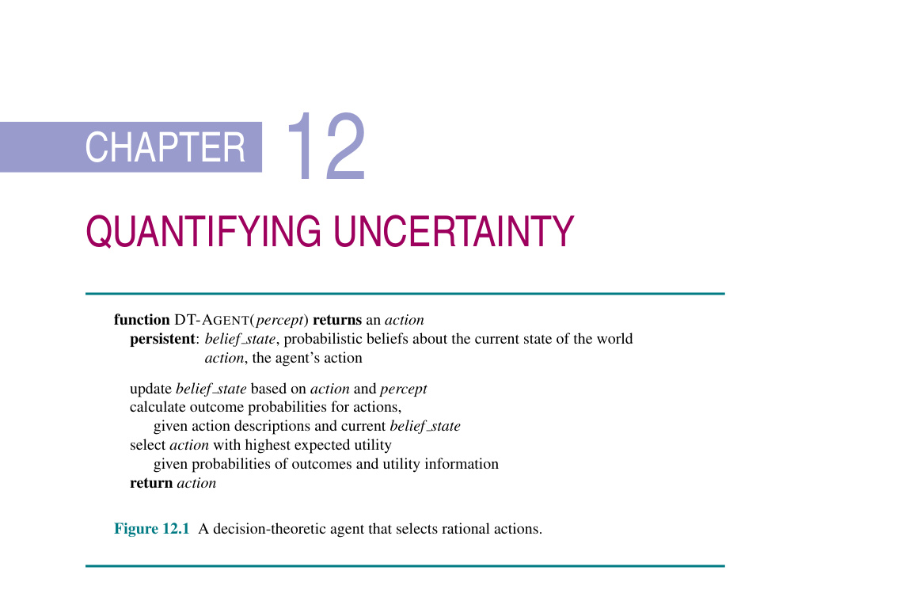
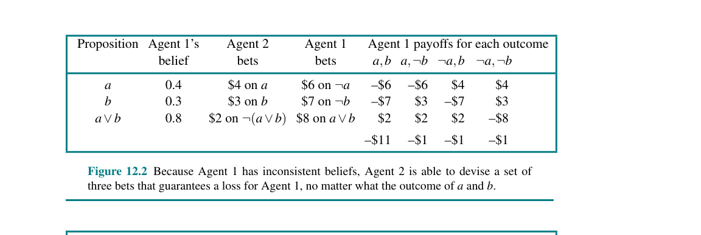
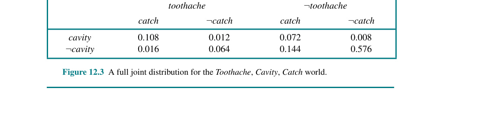
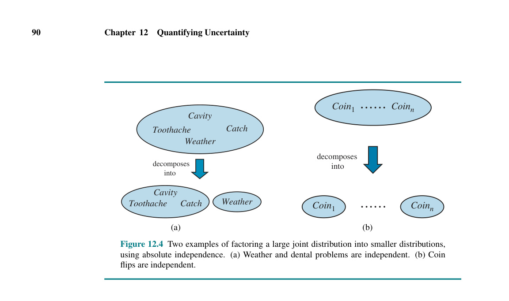
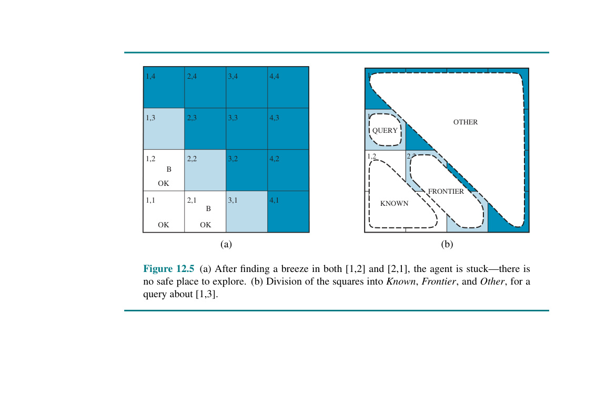
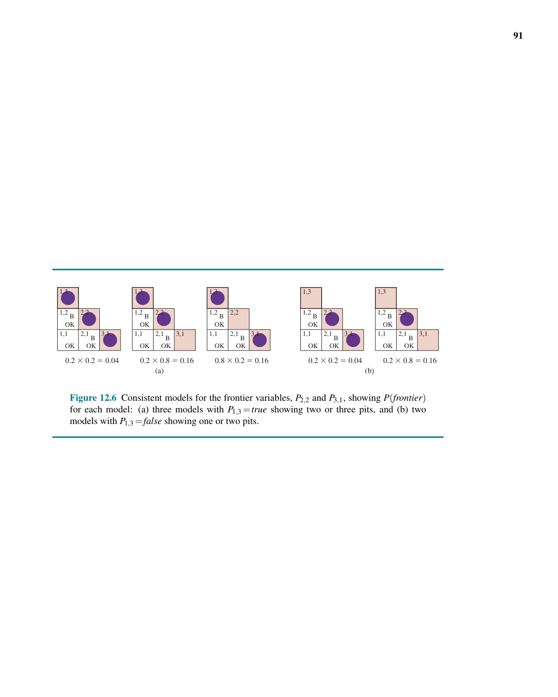

Trong chương này, chúng ta sẽ tìm hiểu cách kiểm soát sự không chắc chắn bằng các mức độ tin tưởng (degrees of belief) bằng số.
Các tác nhân (agents) trong thế giới thực cần xử lý sự không chắc chắn (uncertainty), cho dù đó là do khả năng quan sát một phần (partial observability), tính không tất định (nondeterminism), hay do có các đối thủ (adversaries). Một tác nhân có thể không bao giờ biết chắc chắn nó đang ở trạng thái nào hoặc nó sẽ kết thúc ở đâu sau một chuỗi các hành động.
Chúng ta đã thấy các tác nhân giải quyết vấn đề và các tác nhân logic xử lý sự không chắc chắn bằng cách theo dõi một trạng thái niềm tin (belief state) — một biểu diễn của tập hợp tất cả các trạng thái thế giới có thể xảy ra mà nó có thể đang ở trong đó — và tạo ra một kế hoạch dự phòng (contingency plan) xử lý mọi khả năng mà các cảm biến của nó có thể báo cáo trong quá trình thực thi. Cách tiếp cận này hiệu quả trên các bài toán đơn giản, nhưng nó có những nhược điểm:
Giả sử, ví dụ, một chiếc taxi tự động có mục tiêu đưa một hành khách đến sân bay đúng giờ. Chiếc taxi lập một kế hoạch, $A_{90}$, bao gồm việc rời khỏi nhà 90 phút trước khi chuyến bay khởi hành và lái xe với tốc độ hợp lý. Mặc dù sân bay chỉ cách 5 dặm, một tác nhân logic sẽ không thể kết luận với sự chắc chắn tuyệt đối rằng "Kế hoạch $A_{90}$ sẽ đưa chúng ta đến sân bay kịp lúc." Thay vào đó, nó đưa ra một kết luận yếu hơn "Kế hoạch $A_{90}$ sẽ đưa chúng ta đến sân bay đúng giờ, miễn là xe không bị hỏng, và tôi không gặp tai nạn, và con đường không bị phong tỏa, và không có thiên thạch nào rơi trúng chiếc xe, và ... ." Không có điều kiện nào trong số này có thể được suy luận chắc chắn, do đó chúng ta không thể kết luận rằng kế hoạch sẽ thành công. Đây là bài toán chất lượng logic (logical qualification problem), mà cho đến nay chúng ta vẫn chưa thấy giải pháp thực sự nào.
Tuy nhiên, theo một nghĩa nào đó, $A_{90}$ thực sự là việc đúng đắn nên làm. Ý của chúng ta ở đây là gì? Như chúng ta đã thảo luận trong Chương 2, chúng ta hiểu rằng trong số tất cả các kế hoạch có thể được thực thi, $A_{90}$ được kỳ vọng sẽ tối đa hóa thước đo hiệu suất (performance measure) của tác nhân (nơi mà kỳ vọng liên quan đến kiến thức của tác nhân về môi trường). Thước đo hiệu suất bao gồm việc đến sân bay đúng giờ cho chuyến bay, tránh việc phải chờ đợi lâu, không hiệu quả tại sân bay, và tránh bị phạt quá tốc độ trên đường đi. Kiến thức của tác nhân không thể đảm bảo bất kỳ kết quả nào trong số này cho $A_{90}$, nhưng nó có thể cung cấp một số mức độ tin tưởng (degree of belief) rằng chúng sẽ đạt được.
Các kế hoạch khác, chẳng hạn như $A_{180}$, có thể làm tăng niềm tin của tác nhân rằng nó sẽ đến sân bay đúng giờ, nhưng cũng làm tăng khả năng phải chờ đợi một khoảng thời gian dài, buồn tẻ. Việc đúng đắn nên làm — quyết định hợp lý (rational decision) — do đó phụ thuộc vào cả tầm quan trọng tương đối của các mục tiêu khác nhau và khả năng, cũng như mức độ, mà chúng sẽ đạt được. Phần còn lại của phần này sẽ làm rõ những ý tưởng này, chuẩn bị cho việc phát triển các lý thuyết chung về suy luận không chắc chắn (uncertain reasoning) và các quyết định hợp lý (rational decisions) mà chúng tôi trình bày trong chương này và các chương tiếp theo.
Hãy xem xét một ví dụ về suy luận không chắc chắn: chẩn đoán bệnh đau răng của bệnh nhân nha khoa. Việc chẩn đoán — dù là trong y học, sửa chữa ô tô hay bất cứ lĩnh vực nào khác — hầu như luôn bao gồm sự không chắc chắn. Hãy thử viết các quy tắc chẩn đoán nha khoa bằng logic mệnh đề (propositional logic), để chúng ta có thể thấy cách tiếp cận logic bị phá vỡ như thế nào. Xem xét quy tắc đơn giản sau:
Toothache $\Rightarrow$ Cavity . (Đau_răng $\Rightarrow$ Sâu_răng)
Vấn đề là quy tắc này sai. Không phải tất cả những bệnh nhân bị đau răng đều có răng sâu; một số người mắc bệnh nướu răng, áp xe, hoặc một trong nhiều vấn đề khác:
Toothache $\Rightarrow$ Cavity $\lor$ GumProblem $\lor$ Abscess ...
Thật không may, để làm cho quy tắc này đúng, chúng ta phải thêm một danh sách gần như vô hạn các vấn đề có thể xảy ra. Chúng ta có thể thử chuyển quy tắc thành một quy tắc nguyên nhân - kết quả (causal rule):
Cavity $\Rightarrow$ Toothache .
Nhưng quy tắc này cũng không đúng; không phải tất cả các trường hợp sâu răng đều gây ra đau. Cách duy nhất để khắc phục quy tắc là làm cho nó logic hoàn chỉnh: bổ sung vào phía bên trái với tất cả các điều kiện cần thiết để sâu răng gây ra đau răng. Cố gắng sử dụng logic để đối phó với một miền như chẩn đoán y khoa do đó sẽ thất bại vì ba lý do chính:
Mối liên hệ giữa đau răng và sâu răng không phải là một hệ quả logic chặt chẽ theo cả hai hướng. Đây là đặc điểm điển hình của lĩnh vực y khoa, cũng như hầu hết các lĩnh vực đòi hỏi sự phán đoán khác: luật, kinh doanh, thiết kế, sửa chữa ô tô, làm vườn, hẹn hò, v.v. Kiến thức của tác nhân trong trường hợp tốt nhất chỉ có thể cung cấp một mức độ tin tưởng (degree of belief) vào các câu (sentences) liên quan. Công cụ chính của chúng ta để đối phó với các mức độ tin tưởng là lý thuyết xác suất (probability theory). Trong thuật ngữ của Phần 8.1, các cam kết bản thể học (ontological commitments) của logic và lý thuyết xác suất là giống nhau — rằng thế giới được cấu thành bởi các sự kiện đúng hoặc không đúng trong bất kỳ trường hợp cụ thể nào — nhưng các cam kết nhận thức luận (epistemological commitments) thì khác nhau: một tác nhân logic tin rằng mỗi câu là đúng hoặc sai hoặc không có ý kiến, trong khi một tác nhân xác suất có thể có mức độ tin tưởng bằng số nằm giữa 0 (đối với các câu chắc chắn sai) và 1 (chắc chắn đúng).
Lý thuyết xác suất cung cấp một cách để tóm tắt sự không chắc chắn phát sinh từ sự lười biếng và sự thiếu hiểu biết của chúng ta, từ đó giải quyết bài toán chất lượng (qualification problem). Chúng ta có thể không biết chắc chắn bệnh nhân cụ thể mắc bệnh gì, nhưng chúng ta tin rằng có, ví dụ, 80% khả năng — tức là, xác suất bằng 0.8 — rằng bệnh nhân đang bị đau răng thì bị sâu răng. Tức là, chúng ta kỳ vọng rằng trong tất cả các tình huống không thể phân biệt được với tình huống hiện tại dựa trên những kiến thức của chúng ta, bệnh nhân sẽ có răng sâu trong 80% trường hợp đó. Niềm tin này có thể được rút ra từ dữ liệu thống kê — 80% bệnh nhân đau răng từng khám cho đến nay đã bị sâu răng — hoặc từ một số kiến thức chung về nha khoa, hoặc từ sự kết hợp của nhiều nguồn bằng chứng (evidence sources).
Một điểm dễ nhầm lẫn là tại thời điểm chẩn đoán, không có sự không chắc chắn nào trong thế giới thực: bệnh nhân hoặc là bị sâu răng hoặc là không. Vậy việc nói xác suất bị sâu răng là 0.8 có ý nghĩa gì? Lẽ ra nó phải là 0 hoặc 1 chứ? Câu trả lời là các phát biểu xác suất được đưa ra liên quan đến một trạng thái kiến thức (knowledge state), không phải đối với thế giới thực. Chúng ta nói "Xác suất bệnh nhân bị sâu răng, nếu biết rằng cô ấy bị đau răng, là 0.8." Nếu sau đó chúng ta biết được rằng bệnh nhân có tiền sử bệnh nướu răng, chúng ta có thể đưa ra một phát biểu khác: "Xác suất bệnh nhân bị sâu răng, nếu biết rằng cô ấy bị đau răng và có tiền sử bệnh nướu răng, là 0.4." Nếu chúng ta thu thập thêm các bằng chứng có tính thuyết phục chống lại khả năng bị sâu răng, chúng ta có thể nói "Xác suất bệnh nhân bị sâu răng, dựa trên tất cả những gì chúng ta biết hiện tại, gần bằng 0." Lưu ý rằng các phát biểu này không mâu thuẫn lẫn nhau; mỗi phát biểu là một nhận định riêng biệt về một trạng thái kiến thức khác nhau.
Hãy xem xét lại kế hoạch $A_{90}$ để đến sân bay. Giả sử nó mang lại cho chúng ta 97% cơ hội bắt kịp chuyến bay. Điều này có nghĩa nó là một sự lựa chọn hợp lý không? Chưa chắc: có thể có các kế hoạch khác, chẳng hạn như $A_{180}$, với xác suất cao hơn. Nếu việc không bỏ lỡ chuyến bay là vô cùng quan trọng (vital), thì việc đánh cược chờ đợi lâu hơn ở sân bay là đáng giá. Vậy còn $A_{1440}$, một kế hoạch liên quan đến việc rời khỏi nhà trước 24 giờ thì sao? Trong hầu hết các tình huống, đây không phải là một sự lựa chọn tốt, bởi vì mặc dù nó gần như đảm bảo sẽ đến nơi đúng giờ, nó đi kèm với sự chờ đợi không thể chịu đựng nổi — chưa kể đến một chế độ ăn uống tại sân bay có thể gây khó chịu.
Để đưa ra những lựa chọn như vậy, một tác nhân trước tiên phải có những sở thích (preferences) giữa các kết quả (outcomes) có thể khác nhau của các kế hoạch khác nhau. Một kết quả là một trạng thái được chỉ định hoàn chỉnh, bao gồm các yếu tố như việc tác nhân có đến đúng giờ không và khoảng thời gian chờ đợi tại sân bay. Chúng ta sử dụng lý thuyết độ thỏa dụng (utility theory) để biểu diễn các sở thích và suy luận định lượng với chúng. (Thuật ngữ độ thỏa dụng (utility) được sử dụng ở đây theo nghĩa là "chất lượng của việc hữu ích", không phải theo nghĩa của công ty điện lực hay công ty cấp nước.) Lý thuyết độ thỏa dụng nói rằng mọi trạng thái (hoặc chuỗi trạng thái) đều có một mức độ hữu ích, hoặc độ thỏa dụng, đối với một tác nhân và tác nhân sẽ thích các trạng thái có độ thỏa dụng cao hơn.
Độ thỏa dụng của một trạng thái là tương đối đối với một tác nhân. Ví dụ, độ thỏa dụng của một trạng thái trong đó quân Trắng đã chiếu tướng quân Đen trong một ván cờ vua hiển nhiên là cao đối với tác nhân chơi quân Trắng, nhưng lại thấp đối với tác nhân chơi quân Đen. Nhưng chúng ta không thể dựa hoàn toàn vào các điểm số 1, 1/2 và 0 được quy định bởi luật cờ vua giải đấu — một số kỳ thủ (bao gồm cả các tác giả) có thể vô cùng vui mừng khi hòa với nhà vô địch thế giới, trong khi những kỳ thủ khác (bao gồm cả cựu vô địch thế giới) có thể không. Không có cách nào đo lường cho "hương vị" hay sở thích: bạn có thể nghĩ rằng một tác nhân thích kem vị kẹo cao su ớt jalapeno hơn vị sô cô la chip là lập dị, nhưng bạn không thể nói tác nhân đó không hợp lý. Một hàm độ thỏa dụng (utility function) có thể biểu diễn cho bất kỳ tập hợp các sở thích nào — kỳ quặc hoặc điển hình, cao cả hay lầm lạc. Lưu ý rằng độ thỏa dụng có thể giải thích cho lòng vị tha (altruism), chỉ đơn giản bằng cách bao gồm phúc lợi của người khác như một trong những yếu tố.
Các sở thích, như được thể hiện bằng độ thỏa dụng, được kết hợp với các xác suất trong lý thuyết chung về quyết định hợp lý được gọi là lý thuyết quyết định (decision theory):
Lý thuyết quyết định = lý thuyết xác suất + lý thuyết độ thỏa dụng. (Decision theory = probability theory + utility theory)
Ý tưởng cơ bản của lý thuyết quyết định là một tác nhân là hợp lý khi và chỉ khi nó chọn hành động mang lại độ thỏa dụng kỳ vọng cao nhất, trung bình trên tất cả các kết quả có thể có của hành động. Đây được gọi là nguyên tắc độ thỏa dụng kỳ vọng tối đa (maximum expected utility - MEU). Ở đây, "kỳ vọng" có nghĩa là "trung bình" (average) hoặc "giá trị trung bình thống kê" (statistical mean) của các độ thỏa dụng của kết quả, được tính trọng số bởi xác suất của kết quả đó. Chúng ta đã thấy nguyên tắc này được áp dụng trong Chương 6 khi đề cập ngắn gọn về các quyết định tối ưu trong cờ backgammon; nó thực tế là một nguyên tắc hoàn toàn tổng quát cho việc ra quyết định của tác nhân đơn (single-agent).
Hình 12.1 phác thảo cấu trúc của một tác nhân sử dụng lý thuyết quyết định để chọn lựa các hành động. Tác nhân này ở một mức độ trừu tượng là giống hệt với các tác nhân được mô tả trong Chương 4 và 7, những tác nhân duy trì một trạng thái niềm tin phản ánh lịch sử của các quan sát (percepts) cho đến thời điểm hiện tại. Sự khác biệt chính là trạng thái niềm tin của tác nhân ra quyết định lý thuyết (decision-theoretic agent) biểu diễn không chỉ các khả năng của các trạng thái thế giới mà còn cả xác suất của chúng. Đưa ra trạng thái niềm tin và một số hiểu biết về tác động của các hành động, tác nhân có thể đưa ra các dự đoán xác suất về kết quả của các hành động và từ đó chọn ra hành động có độ thỏa dụng kỳ vọng cao nhất.
Chương này và chương tiếp theo sẽ tập trung vào nhiệm vụ biểu diễn và tính toán với các thông tin xác suất nói chung. Chương 14 giải quyết các phương pháp cho các nhiệm vụ cụ thể của việc biểu diễn và cập nhật trạng thái niềm tin theo thời gian và dự đoán kết quả. Chương 18 xem xét các cách kết hợp lý thuyết xác suất với các ngôn ngữ hình thức biểu đạt (expressive formal languages) như logic bậc nhất (first-order logic) và các ngôn ngữ lập trình đa dụng (general-purpose programming languages). Chương 15 bao gồm lý thuyết độ thỏa dụng một cách sâu sắc hơn, và Chương 16 phát triển các thuật toán để lập kế hoạch cho các chuỗi hành động trong các môi trường ngẫu nhiên (stochastic environments). Chương 17 đề cập đến phần mở rộng của những ý tưởng này cho các môi trường đa tác nhân (multiagent environments).

Hình 12.1 ```python function DT-AGENT(percept) returns an action persistent: belief_state, probabilistic beliefs about the current state of the world action, the agent’s action
update belief_state based on action and percept calculate outcome probabilities for actions, given action descriptions and current belief_state select action with highest expected utility given probabilities of outcomes and utility information return action``` Hình 12.1 Một tác nhân ra quyết định lý thuyết chọn lựa các hành động hợp lý.
Để tác nhân (agent) của chúng ta có thể biểu diễn và sử dụng thông tin xác suất, chúng ta cần một ngôn ngữ hình thức. Ngôn ngữ của lý thuyết xác suất theo truyền thống thường là phi hình thức, được viết bởi các nhà toán học con người dành cho các nhà toán học con người khác. Phụ lục A bao gồm phần giới thiệu tiêu chuẩn về lý thuyết xác suất sơ cấp; ở đây, chúng tôi áp dụng một cách tiếp cận phù hợp hơn với nhu cầu của AI và liên kết nó với các khái niệm của logic hình thức (formal logic).
Giống như các khẳng định logic (logical assertions), các khẳng định xác suất (probabilistic assertions) là về các thế giới có thể (possible worlds). Trong khi các khẳng định logic nói lên thế giới có thể nào bị loại trừ nghiêm ngặt (tất cả những thế giới mà ở đó khẳng định là sai), thì các khẳng định xác suất nói về mức độ khả năng xảy ra của các thế giới khác nhau. Trong lý thuyết xác suất, tập hợp tất cả các thế giới có thể được gọi là không gian mẫu (sample space). Các thế giới có thể là xung khắc và triệt để (mutually exclusive and exhaustive) — hai thế giới có thể không thể cùng xảy ra, và một thế giới có thể nào đó bắt buộc phải xảy ra. Ví dụ, nếu chúng ta chuẩn bị đổ hai viên xúc xắc (có thể phân biệt được), có 36 thế giới có thể để xem xét: (1,1), (1,2), ..., (6,6). Chữ cái Hy Lạp $\Omega$ (omega viết hoa) được sử dụng để chỉ không gian mẫu, và $\omega$ (omega viết thường) dùng để chỉ các phần tử của không gian, tức là các thế giới có thể cụ thể.
Một mô hình xác suất (probability model) được xác định đầy đủ liên kết một xác suất bằng số $P(\omega)$ với mỗi thế giới có thể$^1$. Các tiên đề cơ bản của lý thuyết xác suất cho biết mọi thế giới có thể đều có xác suất nằm giữa 0 và 1 và tổng xác suất của tập hợp các thế giới có thể bằng 1:
$0 \leq P(\omega) \leq 1$ cho mọi $\omega$ và $\sum_{\omega \in \Omega} P(\omega) = 1$. (12.1)
Ví dụ, nếu chúng ta giả định rằng mỗi viên xúc xắc là công bằng (fair) và các lần đổ không ảnh hưởng đến nhau, thì mỗi thế giới có thể (1,1), (1,2), ..., (6,6) có xác suất là $1/36$. Nếu xúc xắc bị "đổ chì" (loaded) thì một số thế giới sẽ có xác suất cao hơn và một số thấp hơn, nhưng tổng của chúng vẫn sẽ bằng 1.
Các khẳng định và truy vấn xác suất thường không nói về các thế giới có thể cụ thể, mà là về các tập hợp của chúng. Ví dụ, chúng ta có thể hỏi xác suất mà hai viên xúc xắc cộng lại bằng 11, xác suất tung được xúc xắc đôi (doubles), v.v. Trong lý thuyết xác suất, những tập hợp này được gọi là các biến cố (events) — một thuật ngữ đã được sử dụng rộng rãi ở Chương 10 cho một khái niệm khác. Trong logic, một tập hợp các thế giới tương ứng với một mệnh đề (proposition) trong một ngôn ngữ hình thức; cụ thể, đối với mỗi mệnh đề, tập hợp tương ứng chứa chính xác những thế giới có thể mà trong đó mệnh đề đó là đúng. (Do đó, "biến cố" và "mệnh đề" có nghĩa gần giống nhau trong ngữ cảnh này, ngoại trừ việc một mệnh đề được diễn đạt bằng một ngôn ngữ hình thức). Xác suất liên kết với một mệnh đề được định nghĩa là tổng xác suất của các thế giới mà trong đó nó đúng:
Đối với bất kỳ mệnh đề $\phi$ nào, $P(\phi) = \sum_{\omega \in \phi} P(\omega)$. (12.2)
Ví dụ, khi tung xúc xắc công bằng, chúng ta có $P(\text{Total}=11) = P((5,6)) + P((6,5)) = 1/36 + 1/36 = 1/18$. Lưu ý rằng lý thuyết xác suất không đòi hỏi phải có kiến thức đầy đủ về xác suất của mỗi thế giới có thể. Ví dụ, nếu chúng ta tin rằng hai viên xúc xắc thông đồng để tạo ra cùng một số, chúng ta có thể khẳng định rằng $P(\text{doubles}) = 1/4$ mà không cần biết liệu xúc xắc ưu tiên ra số 6 đôi hay số 2 đôi. Tương tự như với các khẳng định logic, khẳng định này ràng buộc mô hình xác suất tiềm ẩn mà không hoàn toàn xác định nó.
Các xác suất chẳng hạn như $P(\text{Total}=11)$ và $P(\text{doubles})$ được gọi là xác suất không điều kiện (unconditional probabilities) hay xác suất tiên nghiệm (prior probabilities) (và đôi khi chỉ gọi tắt là "priors"); chúng đề cập đến mức độ tin tưởng vào các mệnh đề trong trường hợp không có bất kỳ thông tin nào khác. Tuy nhiên, phần lớn thời gian, chúng ta có một số thông tin, thường được gọi là bằng chứng (evidence), đã được tiết lộ. Ví dụ, viên xúc xắc đầu tiên có thể đã hiện số 5 và chúng ta đang nín thở chờ viên còn lại ngừng quay. Trong trường hợp đó, chúng ta không quan tâm đến xác suất không điều kiện của việc đổ được xúc xắc đôi, mà là xác suất có điều kiện (conditional probabilities) hoặc xác suất hậu nghiệm (posterior probabilities) (hoặc gọi tắt là "posterior") của việc đổ được xúc xắc đôi nếu biết rằng viên xúc xắc đầu tiên là số 5. Xác suất này được viết là $P(\text{doubles}|\text{Die}_1=5)$, trong đó dấu "$|$" được đọc là "cho trước (given)" hoặc "nếu biết rằng".$^2$
Tương tự, nếu tôi đi khám nha sĩ để kiểm tra sức khỏe định kỳ, thì xác suất tiên nghiệm $P(\text{cavity}) = 0.2$ có thể được quan tâm; nhưng nếu tôi đi khám vì bị đau răng, thì xác suất có điều kiện $P(\text{cavity}|\text{toothache}) = 0.6$ mới là điều quan trọng.
$^1$ Hiện tại, chúng ta giả định một tập hợp đếm được, rời rạc của các thế giới. Việc xử lý thích hợp trường hợp liên tục mang lại những biến chứng không mấy liên quan cho hầu hết các mục đích trong AI. $^2$ Lưu ý rằng thứ tự ưu tiên của dấu "$|$" sao cho bất kỳ biểu thức nào có dạng $P(\dots|\dots)$ luôn mang ý nghĩa $P((\dots)|(\dots))$.
Điều quan trọng cần hiểu là $P(\text{cavity}) = 0.2$ vẫn đúng sau khi đã quan sát thấy toothache; nó chỉ không còn đặc biệt hữu dụng nữa. Khi đưa ra quyết định, một tác nhân cần tạo điều kiện dựa trên tất cả các bằng chứng mà nó đã quan sát. Việc hiểu sự khác biệt giữa phép điều kiện hóa (conditioning) và phép suy ra logic (logical implication) cũng rất quan trọng. Khẳng định $P(\text{cavity}|\text{toothache}) = 0.6$ không có nghĩa là "Bất cứ khi nào toothache là đúng, hãy kết luận cavity là đúng với xác suất 0.6" mà nó có nghĩa là "Bất cứ khi nào toothache đúng và chúng ta không có thêm thông tin nào khác, hãy kết luận cavity là đúng với xác suất 0.6". Điều kiện mở rộng này rất quan trọng; ví dụ, nếu chúng ta có thêm thông tin rằng nha sĩ không tìm thấy lỗ sâu răng nào, chúng ta chắc chắn sẽ không muốn kết luận cavity là đúng với xác suất 0.6; thay vào đó chúng ta cần sử dụng $P(\text{cavity} | \text{toothache} \land \neg\text{cavity}) = 0$.
Nói về mặt toán học, xác suất có điều kiện được định nghĩa dựa trên các xác suất không điều kiện như sau: đối với bất kỳ hai mệnh đề $a$ và $b$ nào, ta có
$P(a|b) = \frac{P(a \land b)}{P(b)}$ , (12.3)
điều này đúng bất cứ khi nào $P(b) > 0$. Ví dụ,
$P(\text{doubles}|\text{Die}_1=5) = \frac{P(\text{doubles} \land \text{Die}_1=5)}{P(\text{Die}_1=5)}$ .
Định nghĩa này có ý nghĩa nếu bạn nhớ rằng việc quan sát thấy $b$ sẽ loại trừ tất cả những thế giới có thể mà ở đó $b$ sai, để lại một tập hợp có tổng xác suất chỉ bằng $P(b)$. Trong tập hợp đó, các thế giới mà $a$ đúng phải thỏa mãn $a \land b$ và chiếm một tỷ lệ $P(a \land b)/P(b)$.
Định nghĩa xác suất có điều kiện, Công thức (12.3), có thể được viết dưới một dạng khác được gọi là quy tắc nhân (product rule):
$P(a \land b) = P(a|b)P(b)$. (12.4)
Quy tắc nhân có lẽ dễ nhớ hơn: nó xuất phát từ thực tế là để $a$ và $b$ cùng đúng, chúng ta cần $b$ đúng, và chúng ta cũng cần $a$ đúng với điều kiện $b$ đã đúng.
Trong chương này và chương tiếp theo, các mệnh đề mô tả các tập hợp thế giới có thể thường được viết bằng một ký hiệu kết hợp các yếu tố của logic mệnh đề và ký hiệu thỏa mãn ràng buộc (constraint satisfaction notation). Theo thuật ngữ của Phần 2.4.7, nó là một biểu diễn đã phân rã (factored representation), trong đó một thế giới có thể được biểu diễn bởi một tập hợp các cặp biến/giá trị. Một biểu diễn cấu trúc (structured representation) giàu tính diễn đạt hơn cũng có thể thực hiện được, như được trình bày ở Chương 18.
Các biến trong lý thuyết xác suất được gọi là biến ngẫu nhiên (random variables), và tên của chúng bắt đầu bằng một chữ cái viết hoa. Do đó, trong ví dụ về xúc xắc, Total và Die$_1$ là các biến ngẫu nhiên. Mọi biến ngẫu nhiên là một hàm ánh xạ từ miền của các thế giới có thể $\Omega$ sang một miền giá trị (range) — tập hợp các giá trị có thể mà nó có thể nhận. Miền giá trị của Total đối với hai viên xúc xắc là tập hợp ${2,\dots,12}$ và miền giá trị của Die$_1$ là ${1,\dots,6}$. Tên cho các giá trị luôn được viết thường, vì vậy chúng ta có thể viết $\sum_x P(X=x)$ để tính tổng qua các giá trị của $X$. Một biến ngẫu nhiên Boolean có miền giá trị ${\text{true},\text{false}}$. Ví dụ, mệnh đề tung được xúc xắc đôi có thể được viết là $\text{Doubles}=\text{true}$. (Một miền giá trị thay thế cho các biến Boolean là tập ${0,1}$, trong trường hợp đó, biến được cho là có phân phối Bernoulli). Theo quy ước, các mệnh đề dạng $A=\text{true}$ được viết tắt đơn giản là $a$, trong khi $A=\text{false}$ được viết tắt là $\neg a$. (Việc sử dụng các chữ doubles, cavity và toothache trong phần trước là các cách viết tắt thuộc loại này.)
Các miền giá trị có thể là các tập hợp của các token bất kỳ. Chúng ta có thể chọn miền giá trị của Age (Tuổi) là tập hợp ${\text{juvenile}, \text{teen}, \text{adult}}$ và miền giá trị của Weather (Thời tiết) có thể là ${\text{sun}, \text{rain}, \text{cloud}, \text{snow}}$. Khi không có sự mơ hồ nào có thể xảy ra, việc sử dụng chính một giá trị để thay thế cho mệnh đề "biến cụ thể có giá trị đó" là khá phổ biến; do đó, sun có thể thay thế cho Weather$= \text{sun}$.$^3$
Các ví dụ trước đều có miền giá trị hữu hạn. Các biến cũng có thể có miền giá trị vô hạn — hoặc rời rạc (như các số nguyên) hoặc liên tục (như các số thực). Đối với bất kỳ biến nào có một miền giá trị được sắp thứ tự, các bất đẳng thức cũng được cho phép, chẳng hạn như $\text{NumberOfAtomsInUniverse} \geq 10^{70}$.
Cuối cùng, chúng ta có thể kết hợp các loại mệnh đề sơ cấp (elementary propositions) này (bao gồm cả các dạng rút gọn cho biến Boolean) bằng cách sử dụng các toán tử kết nối của logic mệnh đề. Ví dụ, chúng ta có thể diễn đạt câu "Xác suất bệnh nhân bị sâu răng, biết rằng cô ấy là thiếu niên không bị đau răng, là 0.1" như sau:
$P(\text{cavity} | \neg\text{toothache} \land \text{teen}) = 0.1$.
Trong ký hiệu xác suất, việc sử dụng dấu phẩy (,) thay cho phép hội (conjunction $\land$) cũng rất phổ biến, vì vậy chúng ta có thể viết $P(\text{cavity} | \neg\text{toothache}, \text{teen})$.
Đôi khi chúng ta sẽ muốn nói về xác suất của tất cả các giá trị có thể của một biến ngẫu nhiên. Chúng ta có thể viết:
$P(\text{Weather}=\text{sun}) = 0.6$ $P(\text{Weather}=\text{rain}) = 0.1$ $P(\text{Weather}=\text{cloud}) = 0.29$ $P(\text{Weather}=\text{snow}) = 0.01$ ,
nhưng như một cách viết tắt, chúng ta sẽ cho phép viết
P$(\text{Weather}) = \langle 0.6, 0.1, 0.29, 0.01\rangle$ ,
trong đó chữ P in đậm chỉ ra rằng kết quả là một vectơ các con số, và ở đây chúng ta giả định một thứ tự được định nghĩa sẵn $\langle \text{sun}, \text{rain}, \text{cloud}, \text{snow} \rangle$ trên miền giá trị của Weather. Chúng ta nói rằng phát biểu P định nghĩa một phân phối xác suất (probability distribution) cho biến ngẫu nhiên Weather — nghĩa là, một gán ghép xác suất cho mỗi giá trị có thể có của biến ngẫu nhiên đó. (Trong trường hợp này, với miền rời rạc và hữu hạn, phân phối được gọi là phân phối phân loại (categorical distribution)). Ký hiệu P cũng được dùng cho các phân phối có điều kiện: P$(X|Y)$ đưa ra các giá trị của $P(X=x_i | Y=y_j)$ cho mỗi cặp $i, j$ có thể.
Đối với các biến liên tục, không thể viết ra toàn bộ phân phối dưới dạng một vectơ, bởi vì có vô số các giá trị. Thay vào đó, chúng ta có thể định nghĩa xác suất mà một biến ngẫu nhiên nhận một số giá trị $x$ như là một hàm tham số hóa của $x$, thường được gọi là hàm mật độ xác suất (probability density function). Ví dụ, câu
$P(\text{NoonTemp}=x) = \text{Uniform}(x; 18\text{C}, 26\text{C})$
thể hiện niềm tin rằng nhiệt độ vào buổi trưa được phân bố đều trong khoảng từ 18 đến 26 độ C.
Các hàm mật độ xác suất (đôi khi gọi tắt là pdf) có ý nghĩa khác với các phân phối rời rạc. Việc nói rằng mật độ xác suất là đồng đều từ 18C đến 26C có nghĩa là có 100% cơ hội nhiệt độ sẽ rơi vào đâu đó trong vùng rộng 8C đó và 50% cơ hội nó sẽ rơi vào bất kỳ tiểu vùng (sub-region) nào rộng 4C, v.v. Chúng ta viết mật độ xác suất cho một biến ngẫu nhiên liên tục $X$ tại giá trị $x$ là $P(X=x)$ hoặc chỉ là $P(x)$; định nghĩa trực quan của $P(x)$ là xác suất mà $X$ rơi vào một khu vực nhỏ tùy ý bắt đầu từ $x$, chia cho độ rộng của vùng đó:
$P(x) = \lim_{dx \to 0} \frac{P(x \leq X \leq x + dx)}{dx}$ .
Đối với NoonTemp, chúng ta có
$P(\text{NoonTemp}=x) = \text{Uniform}(x; 18\text{C}, 26\text{C}) = \begin{cases} \frac{1}{8\text{C}} & \text{nếu } 18\text{C} \leq x \leq 26\text{C} \ 0 & \text{trường hợp khác} \end{cases}$ ,
trong đó C là viết tắt của centigrade (độ C, không phải là một hằng số). Trong $P(\text{NoonTemp}=20.18\text{C}) = \frac{1}{8\text{C}}$, lưu ý rằng $\frac{1}{8\text{C}}$ không phải là một xác suất, nó là một mật độ xác suất. Xác suất để NoonTemp bằng chính xác 20.18C là 0, bởi vì 20.18C là một vùng có độ rộng 0. Một số tác giả sử dụng các ký hiệu khác nhau cho xác suất rời rạc và mật độ xác suất; chúng ta sử dụng $P$ cho các giá trị xác suất cụ thể và P cho các vectơ giá trị trong cả hai trường hợp, vì sự nhầm lẫn hiếm khi phát sinh và các phương trình thường giống hệt nhau. Lưu ý rằng các xác suất là các con số không có đơn vị, trong khi các hàm mật độ được đo bằng một đơn vị, trong trường hợp này là độ C nghịch đảo ($1/\text{C}$). Nếu cùng một khoảng nhiệt độ được biểu thị bằng độ F, nó sẽ có độ rộng là 14.4 độ, và mật độ sẽ là $1/14.4\text{F}$.
Ngoài các phân phối trên các biến đơn lẻ, chúng ta cần ký hiệu cho các phân phối trên nhiều biến. Dấu phẩy được sử dụng cho việc này. Ví dụ, P$(\text{Weather}, \text{Cavity})$ biểu thị xác suất của tất cả các tổ hợp giá trị của Weather và Cavity. Đây là một bảng $4 \times 2$ các xác suất được gọi là phân phối xác suất đồng thời (joint probability distribution) của Weather và Cavity. Chúng ta cũng có thể trộn lẫn các biến và các giá trị cụ thể; P$(\text{sun}, \text{Cavity})$ sẽ là một vectơ gồm hai phần tử đưa ra xác suất của một chiếc răng sâu vào một ngày nắng và không có răng sâu vào một ngày nắng.
Ký hiệu P làm cho một số biểu thức trở nên ngắn gọn hơn nhiều so với bình thường. Ví dụ, các quy tắc nhân (xem Công thức (12.4)) đối với tất cả các giá trị có thể của Weather và Cavity có thể được viết thành một phương trình duy nhất:
P$(\text{Weather}, \text{Cavity}) = \textbf{P}(\text{Weather}|\text{Cavity})\textbf{P}(\text{Cavity})$,
thay vì phải viết thành $4 \times 2 = 8$ phương trình riêng biệt (sử dụng viết tắt $W$ và $C$):
$P(W=\text{sun} \land C=\text{true}) = P(W=\text{sun} | C=\text{true})P(C=\text{true})$ $P(W=\text{rain} \land C=\text{true}) = P(W=\text{rain} | C=\text{true})P(C=\text{true})$ $P(W=\text{cloud} \land C=\text{true}) = P(W=\text{cloud} | C=\text{true})P(C=\text{true})$ $P(W=\text{snow} \land C=\text{true}) = P(W=\text{snow} | C=\text{true})P(C=\text{true})$ $P(W=\text{sun} \land C=\text{false}) = P(W=\text{sun} | C=\text{false})P(C=\text{false})$ $P(W=\text{rain} \land C=\text{false}) = P(W=\text{rain} | C=\text{false})P(C=\text{false})$ $P(W=\text{cloud} \land C=\text{false}) = P(W=\text{cloud} | C=\text{false})P(C=\text{false})$ $P(W=\text{snow} \land C=\text{false}) = P(W=\text{snow} | C=\text{false})P(C=\text{false})$ .
Như một trường hợp suy biến (degenerate case), P$(\text{sun}, \text{cavity})$ không có biến nào và do đó là một vectơ không chiều (zero-dimensional vector), mà chúng ta có thể coi như một giá trị vô hướng (scalar value).
Bây giờ chúng ta đã định nghĩa cú pháp cho các mệnh đề và các khẳng định xác suất, và chúng ta đã đưa ra một phần của ngữ nghĩa (semantics): Công thức (12.2) định nghĩa xác suất của một mệnh đề là tổng xác suất của các thế giới mà trong đó nó đúng. Để hoàn thiện ngữ nghĩa, chúng ta cần nói rõ các thế giới là gì và làm thế nào để xác định liệu một mệnh đề có đúng trong một thế giới hay không. Chúng ta vay mượn phần này trực tiếp từ ngữ nghĩa của logic mệnh đề, như sau. Một thế giới có thể được định nghĩa là một phép gán giá trị cho tất cả các biến ngẫu nhiên đang được xem xét.
Dễ dàng nhận thấy rằng định nghĩa này thỏa mãn yêu cầu cơ bản là các thế giới có thể phải loại trừ lẫn nhau và triệt để (Bài tập 12.EXEX). Ví dụ, nếu các biến ngẫu nhiên là Cavity, Toothache, và Weather, thì có $2 \times 2 \times 4 = 16$ thế giới có thể. Hơn nữa, tính đúng đắn của bất kỳ mệnh đề nào đã cho đều có thể được xác định dễ dàng trong các thế giới đó bằng chính phép tính chân lý đệ quy mà chúng ta đã sử dụng cho logic mệnh đề (xem trang 236).
Lưu ý rằng một số biến ngẫu nhiên có thể bị dư thừa (redundant), theo nghĩa là các giá trị của chúng có thể được lấy trong mọi trường hợp từ các giá trị của các biến khác. Ví dụ, biến Doubles trong thế giới hai xúc xắc là đúng khi và chỉ khi $\text{Die}_1 = \text{Die}_2$. Việc đưa Doubles vào như một trong các biến ngẫu nhiên, ngoài Die$_1$ và Die$_2$, dường như làm tăng số lượng các thế giới có thể từ 36 lên 72, nhưng tất nhiên chính xác một nửa trong số 72 thế giới đó sẽ không thể xảy ra về mặt logic và sẽ có xác suất là 0.
Từ định nghĩa trước đó về các thế giới có thể, suy ra rằng một mô hình xác suất được xác định hoàn toàn bởi phân phối đồng thời cho tất cả các biến ngẫu nhiên — được gọi là phân phối xác suất đồng thời đầy đủ (full joint probability distribution). Ví dụ, cho trước Cavity, Toothache, và Weather, phân phối đồng thời đầy đủ là P$(\text{Cavity}, \text{Toothache}, \text{Weather})$. Phân phối đồng thời này có thể được biểu diễn dưới dạng bảng $2 \times 2 \times 4$ với 16 mục (entries). Bởi vì xác suất của mọi mệnh đề là một tổng qua các thế giới có thể, một phân phối đồng thời đầy đủ là đủ (về mặt nguyên tắc) để tính toán xác suất của bất kỳ mệnh đề nào. Chúng ta sẽ xem xét các ví dụ về cách thực hiện điều này trong Phần 12.3.
$^3$ Những quy ước này kết hợp lại dẫn đến một sự mơ hồ tiềm ẩn về ký hiệu khi lấy tổng qua các giá trị của một biến Boolean: $P(a)$ là xác suất mà $A$ đúng, trong khi trong biểu thức $\sum_a P(a)$ nó chỉ đơn giản tham chiếu đến xác suất của một trong các giá trị $a$ của $A$.
Các tiên đề cơ bản của xác suất (Công thức (12.1) và (12.2)) ngụ ý những mối quan hệ nhất định giữa các mức độ tin tưởng có thể được gán cho các mệnh đề có liên hệ logic với nhau. Ví dụ, chúng ta có thể rút ra mối quan hệ quen thuộc giữa xác suất của một mệnh đề và xác suất của phủ định của nó:
$P(\neg a) = \sum_{\omega \in \neg a} P(\omega)$ theo Công thức (12.2) $= \sum_{\omega \in \neg a} P(\omega) + \sum_{\omega \in a} P(\omega) - \sum_{\omega \in a} P(\omega)$ $= \sum_{\omega \in \Omega} P(\omega) - \sum_{\omega \in a} P(\omega)$ nhóm hai số hạng đầu tiên $= 1 - P(a)$ theo (12.1) và (12.2).
Chúng ta cũng có thể rút ra công thức nổi tiếng cho xác suất của một phép tuyển (disjunction), đôi khi được gọi là nguyên lý bao hàm-loại trừ (inclusion-exclusion principle):
$P(a \lor b) = P(a) + P(b) - P(a \land b)$. (12.5)
Quy tắc này rất dễ nhớ bằng cách lưu ý rằng các trường hợp $a$ đúng, cùng với các trường hợp $b$ đúng, chắc chắn sẽ bao hàm tất cả các trường hợp $a \lor b$ đúng; nhưng khi cộng hai tập hợp các trường hợp đó lại, phần giao của chúng đã bị tính hai lần, do đó chúng ta cần trừ đi $P(a \land b)$.
Các Công thức (12.1) và (12.5) thường được gọi là các tiên đề của Kolmogorov (Kolmogorov’s axioms) để vinh danh nhà toán học Andrei Kolmogorov, người đã chỉ ra cách xây dựng phần còn lại của lý thuyết xác suất từ nền tảng đơn giản này và cách xử lý những khó khăn do các biến liên tục gây ra.$^4$ Trong khi Công thức (12.2) mang tính định nghĩa, Công thức (12.5) tiết lộ rằng các tiên đề này thực sự ràng buộc các mức độ tin tưởng mà một tác nhân có thể có về các mệnh đề liên quan logic. Điều này tương tự như việc một tác nhân logic không thể đồng thời tin vào $A$, $B$, và $\neg(A \land B)$, bởi vì không có thế giới có thể nào mà cả ba đều đúng. Tuy nhiên, với xác suất, các phát biểu không đề cập trực tiếp đến thế giới, mà nói về trạng thái kiến thức của chính tác nhân. Vậy, tại sao một tác nhân lại không thể có tập hợp niềm tin sau đây (mặc dù chúng vi phạm các tiên đề của Kolmogorov)?
$P(a) = 0.4 \quad P(b) = 0.3 \quad P(a \land b) = 0.0 \quad P(a \lor b) = 0.8$. (12.6)
$^4$ Những khó khăn bao gồm tập Vitali (Vitali set), một tập con được xác định rõ của khoảng $[0,1]$ mà không có một kích thước xác định rõ nào.

Hình 12.2 | Mệnh đề (Proposition) | Niềm tin của Agent 1 (Agent 1's belief) | Agent 2 cược (Agent 2 bets) | Agent 1 cược (Agent 1 bets) | Lợi nhuận của Agent 1 cho mỗi kết quả (Agent 1 payoffs for each outcome) | | :--- | :--- | :--- | :--- | :--- | | | | | | $a,b$ \quad $a,\neg b$ \quad $\neg a,b$ \quad $\neg a,\neg b$ | | $a$ | 0.4 | \$4 cho $a$ | \$6 cho $\neg a$ | -\$6 \quad -\$6 \quad \$4 \quad \$4 | | $b$ | 0.3 | \$3 cho $b$ | \$7 cho $\neg b$ | -\$7 \quad \$3 \quad -\$7 \quad \$3 | | $a \lor b$ | 0.8 | \$2 cho $\neg(a \lor b)$ | \$8 cho $a \lor b$ | \$2 \quad \$2 \quad \$2 \quad -\$8 | | | | | Tổng: | -\$11 \quad -\$1 \quad -\$1 \quad -\$1 |
Hình 12.2 Do Agent 1 có những niềm tin không nhất quán, Agent 2 có thể nghĩ ra một bộ ba cược đảm bảo Agent 1 luôn thua lỗ, bất kể kết quả của $a$ và $b$ là gì.
Loại câu hỏi này đã là chủ đề của hàng chục năm tranh luận căng thẳng giữa những người ủng hộ việc sử dụng xác suất làm dạng thức duy nhất hợp pháp cho các mức độ tin tưởng, và những người ủng hộ các cách tiếp cận thay thế.
Một lập luận cho các tiên đề của xác suất, được Bruno de Finetti phát biểu lần đầu tiên vào năm 1931 (xem bản dịch tiếng Anh của de Finetti, 1993), như sau: Nếu một tác nhân có một mức độ tin tưởng nào đó vào một mệnh đề $a$, thì tác nhân đó có thể đưa ra mức cược (odds) mà tại đó nó bàng quan (indifferent) đối với việc đặt cược cho hay chống lại $a$.$^5$ Hãy nghĩ về điều đó như một trò chơi giữa hai tác nhân: Agent 1 phát biểu, "mức độ tin tưởng của tôi vào biến cố $a$ là 0.4." Khi đó Agent 2 tự do chọn lựa sẽ cược ủng hộ hay chống lại $a$ với mức cược nhất quán với mức độ tin tưởng đã phát biểu. Tức là, Agent 2 có thể chọn chấp nhận mức cược của Agent 1 rằng $a$ sẽ xảy ra, đưa ra \$6 để đổi lấy \$4 của Agent 1. Hoặc Agent 2 có thể chấp nhận mức cược của Agent 1 rằng $\neg a$ sẽ xảy ra, đưa ra \$4 đổi lấy \$6 của Agent 1. Sau đó chúng ta quan sát kết quả của $a$, và ai đúng sẽ thu tiền. Nếu các mức độ tin tưởng của một người không phản ánh chính xác thế giới, thì người ta sẽ cho rằng người đó sẽ mất tiền về lâu dài vào tay một tác nhân đối thủ mà niềm tin của họ phản ánh trạng thái của thế giới chính xác hơn.
Định lý De Finetti không quan tâm đến việc chọn các giá trị đúng cho các xác suất riêng lẻ, mà quan tâm đến việc chọn các giá trị cho xác suất của các mệnh đề liên quan logic: Nếu Agent 1 bày tỏ một tập hợp các mức độ tin tưởng vi phạm các tiên đề của lý thuyết xác suất, thì sẽ tồn tại một bộ cược kết hợp của Agent 2 đảm bảo rằng Agent 1 sẽ mất tiền trong mọi lần. Ví dụ, giả sử Agent 1 có tập hợp các mức độ tin tưởng từ Công thức (12.6). Hình 12.2 cho thấy nếu Agent 2 chọn cược \$4 cho $a$, \$3 cho $b$, và \$2 cho $\neg(a \lor b)$, thì Agent 1 luôn mất tiền, bất kể kết quả của $a$ và $b$ là gì. Định lý De Finetti ngụ ý rằng không có tác nhân hợp lý nào lại có thể có những niềm tin vi phạm các tiên đề của xác suất.
Một phản đối phổ biến đối với định lý de Finetti là trò chơi cá cược này khá gượng ép. Ví dụ, điều gì xảy ra nếu người ta từ chối cá cược? Liệu điều đó có kết thúc lập luận không? Câu trả lời là trò chơi cá cược là một mô hình trừu tượng cho tình huống ra quyết định mà mọi tác nhân đều không thể tránh khỏi phải tham gia vào mọi thời điểm. Mọi hành động (kể cả không hành động) đều là một dạng cá cược, và mọi kết quả đều có thể xem như phần thưởng (payoff) của ván cược đó. Từ chối đặt cược cũng giống như từ chối cho phép thời gian trôi qua.
Nhiều lập luận triết học mạnh mẽ khác đã được đưa ra để bảo vệ việc sử dụng xác suất, đáng chú ý nhất là của Cox (1946), Carnap (1950), và Jaynes (2003). Mỗi người họ xây dựng một tập hợp các tiên đề cho việc suy luận với các mức độ tin tưởng: không có mâu thuẫn, tương ứng với logic thông thường (ví dụ: nếu niềm tin vào $A$ tăng lên, thì niềm tin vào $\neg A$ phải giảm xuống), v.v. Tiên đề gây tranh cãi duy nhất là các mức độ tin tưởng phải là những con số, hoặc ít nhất phải hoạt động như những con số, theo nghĩa chúng phải có tính bắc cầu (transitive) (nếu niềm tin vào $A$ lớn hơn niềm tin vào $B$, và niềm tin vào $B$ lớn hơn niềm tin vào $C$, thì niềm tin vào $A$ phải lớn hơn niềm tin vào $C$) và có thể so sánh được (comparable) (niềm tin vào $A$ phải bằng, lớn hơn, hoặc nhỏ hơn niềm tin vào $B$). Sau đó, có thể chứng minh được rằng xác suất là cách tiếp cận duy nhất thỏa mãn những tiên đề này.
Tuy nhiên, với việc thế giới đang vận hành theo cách của nó, những minh chứng thực tiễn đôi khi còn có tiếng nói mạnh mẽ hơn cả những chứng minh bằng lý thuyết. Thành công của các hệ thống suy luận dựa trên lý thuyết xác suất đã hiệu quả hơn nhiều so với các lập luận triết học trong việc thu hút thêm người ủng hộ. Bây giờ chúng ta hãy xem xét cách các tiên đề có thể được áp dụng để thực hiện suy luận.
$^5$ Ai đó có thể lập luận rằng sở thích của tác nhân đối với các số dư tài khoản ngân hàng khác nhau có thể theo kiểu mà khả năng mất \$1 không bị triệt tiêu bởi khả năng thắng \$1 tương đương. Một câu trả lời khả dĩ là làm cho các khoản cược đủ nhỏ để tránh vấn đề này. Phân tích của Savage (1954) đã lảng tránh hoàn toàn vấn đề này.
Trong phần này, chúng tôi mô tả một phương pháp đơn giản cho suy luận xác suất (probabilistic inference) — nghĩa là việc tính toán các xác suất hậu nghiệm (posterior probabilities) cho các mệnh đề truy vấn (query propositions) nếu biết các bằng chứng quan sát được. Chúng tôi sử dụng phân phối đồng thời đầy đủ làm "cơ sở tri thức" (knowledge base) mà từ đó các câu trả lời cho mọi câu hỏi có thể được rút ra. Trong quá trình này, chúng tôi cũng giới thiệu một số kỹ thuật hữu ích để thao tác với các phương trình liên quan đến xác suất.
Chúng ta bắt đầu bằng một ví dụ đơn giản: một miền chỉ bao gồm ba biến Boolean là Toothache (đau răng), Cavity (sâu răng), và Catch (cây trâm thép của nha sĩ bị kẹt vào răng tôi). Phân phối đồng thời đầy đủ là một bảng $2 \times 2 \times 2$ như được trình bày trong Hình 12.3.

Hình 12.3 | | toothache | | $\neg\textit{toothache}$ | | | :--- | :--- | :--- | :--- | :--- | | | catch | $\neg\textit{catch}$ | catch | $\neg\textit{catch}$ | | cavity | 0.108 | 0.012 | 0.072 | 0.008 | | $\neg\textit{cavity}$ | 0.016 | 0.064 | 0.144 | 0.576 |
Hình 12.3 Phân phối đồng thời đầy đủ cho thế giới của Toothache, Cavity, Catch.
Lưu ý rằng tổng các xác suất trong phân phối đồng thời bằng 1, như được yêu cầu bởi các tiên đề xác suất. Cũng cần lưu ý rằng Công thức (12.2) cho chúng ta một cách trực tiếp để tính xác suất của bất kỳ mệnh đề nào, dù đơn giản hay phức tạp: đơn giản chỉ cần xác định những thế giới có thể mà ở đó mệnh đề đúng và cộng các xác suất của chúng lại với nhau. Ví dụ, có sáu thế giới có thể mà ở đó $\text{cavity} \lor \text{toothache}$ đúng:
$P(\text{cavity} \lor \text{toothache}) = 0.108 + 0.012 + 0.072 + 0.008 + 0.016 + 0.064 = 0.28$.
Một nhiệm vụ đặc biệt phổ biến là trích xuất phân phối trên một số tập hợp con của các biến hoặc một biến đơn lẻ. Ví dụ, việc cộng các mục ở hàng đầu tiên mang lại xác suất không điều kiện (unconditional probability) hoặc xác suất biên (marginal probability)$^6$ của cavity:
$P(\text{cavity}) = 0.108 + 0.012 + 0.072 + 0.008 = 0.2$.
Quá trình này được gọi là biên hóa (marginalization), hay lấy tổng loại trừ (summing out) — bởi vì chúng ta cộng các xác suất của từng giá trị có thể có của các biến khác, qua đó loại bỏ chúng ra khỏi phương trình. Chúng ta có thể viết quy tắc biên hóa tổng quát sau cho bất kỳ tập biến $\textbf{Y}$ và $\textbf{Z}$ nào:
P$(\textbf{Y}) = \sum_{\textbf{z}} \textbf{P}(\textbf{Y}, \textbf{Z}=\textbf{z})$, (12.7)
trong đó $\sum_{\textbf{z}}$ là tính tổng qua tất cả các kết hợp giá trị có thể của tập biến $\textbf{Z}$. Như thường lệ, chúng ta có thể viết tắt $\textbf{P}(\textbf{Y}, \textbf{Z}=\textbf{z})$ trong phương trình này thành $\textbf{P}(\textbf{Y}, \textbf{z})$. Đối với ví dụ Cavity, Công thức (12.7) tương ứng với phương trình sau:
P$(\text{Cavity}) = \textbf{P}(\text{Cavity}, \text{toothache}, \text{catch}) + \textbf{P}(\text{Cavity}, \text{toothache}, \neg\text{catch})$ $\quad + \textbf{P}(\text{Cavity}, \neg\text{toothache}, \text{catch}) + \textbf{P}(\text{Cavity}, \neg\text{toothache}, \neg\text{catch})$ $\quad = \langle 0.108, 0.016 \rangle + \langle 0.012, 0.064 \rangle + \langle 0.072, 0.144 \rangle + \langle 0.008, 0.576 \rangle$ $\quad = \langle 0.2, 0.8 \rangle$.
Sử dụng quy tắc nhân (Công thức (12.4)), chúng ta có thể thay thế $\textbf{P}(\textbf{Y}, \textbf{z})$ trong Công thức (12.7) bằng $\textbf{P}(\textbf{Y}|\textbf{z})P(\textbf{z})$, thu được một quy tắc gọi là quy tắc điều kiện hóa (conditioning):
P$(\textbf{Y}) = \sum_{\textbf{z}} \textbf{P}(\textbf{Y}|\textbf{z})P(\textbf{z})$. (12.8)
Biên hóa và điều kiện hóa hóa ra là những quy tắc hữu ích cho tất cả các loại phép dẫn xuất liên quan đến các biểu thức xác suất.
Trong hầu hết các trường hợp, chúng ta quan tâm đến việc tính toán các xác suất có điều kiện của một số biến, khi biết bằng chứng về các biến khác. Xác suất có điều kiện có thể được tìm thấy bằng cách đầu tiên sử dụng Công thức (12.3) để có được một biểu thức theo các xác suất không điều kiện và sau đó đánh giá biểu thức đó từ phân phối đồng thời đầy đủ. Ví dụ, chúng ta có thể tính toán xác suất có răng sâu, nếu có bằng chứng về việc đau răng, như sau:
$P(\text{cavity}|\text{toothache}) = \frac{P(\text{cavity} \land \text{toothache})}{P(\text{toothache})}$ $\quad = \frac{0.108 + 0.012}{0.108 + 0.012 + 0.016 + 0.064}$ $\quad = 0.6$.
Để kiểm tra lại, chúng ta cũng có thể tính xác suất không bị sâu răng, khi biết có đau răng:
$P(\neg\text{cavity}|\text{toothache}) = \frac{P(\neg\text{cavity} \land \text{toothache})}{P(\text{toothache})}$ $\quad = \frac{0.016 + 0.064}{0.108 + 0.012 + 0.016 + 0.064}$ $\quad = 0.4$.
Hai giá trị này có tổng bằng 1.0, như vốn dĩ phải vậy. Lưu ý rằng số hạng $P(\text{toothache})$ nằm ở mẫu số trong cả hai phép tính này. Nếu biến Cavity có nhiều hơn hai giá trị, nó sẽ nằm ở mẫu số cho tất cả chúng. Thực tế, nó có thể được xem như một hằng số chuẩn hóa (normalization constant) đối với phân phối P$(\text{Cavity}|\text{toothache})$, đảm bảo rằng tổng của nó bằng 1. Xuyên suốt các chương đề cập đến xác suất, chúng tôi sử dụng $\alpha$ để biểu thị các hằng số chuẩn hóa như vậy. Với ký hiệu này, chúng ta có thể viết hai phương trình trước thành một phương trình:
P$(\text{Cavity}|\text{toothache}) = \alpha \textbf{P}(\text{Cavity}, \text{toothache})$ $\quad = \alpha [\textbf{P}(\text{Cavity}, \text{toothache}, \text{catch}) + \textbf{P}(\text{Cavity}, \text{toothache}, \neg\text{catch})]$ $\quad = \alpha [\langle 0.108, 0.016 \rangle + \langle 0.012, 0.064 \rangle] = \alpha \langle 0.12, 0.08 \rangle = \langle 0.6, 0.4 \rangle$.
Nói cách khác, chúng ta có thể tính toán P$(\text{Cavity}|\text{toothache})$ ngay cả khi chúng ta không biết giá trị của $P(\text{toothache})$! Chúng ta tạm thời quên đi yếu tố $1/P(\text{toothache})$ và cộng các giá trị của $\text{cavity}$ và $\neg\text{cavity}$, thu được $0.12$ và $0.08$. Đó là những tỷ lệ tương đối chính xác, nhưng tổng của chúng không bằng $1$, vì vậy chúng ta chuẩn hóa chúng bằng cách chia mỗi số cho $0.12 + 0.08$, nhận được xác suất thực sự là $0.6$ và $0.4$. Chuẩn hóa hóa ra là một đường tắt (shortcut) hữu ích trong nhiều tính toán xác suất, cả để làm cho việc tính toán dễ dàng hơn và cho phép chúng ta tiến hành khi một số đánh giá xác suất (chẳng hạn như $P(\text{toothache})$) không có sẵn.
Từ ví dụ này, chúng ta có thể rút ra một thủ tục suy luận chung. Chúng ta bắt đầu với trường hợp trong đó truy vấn liên quan đến một biến duy nhất, $X$ (Cavity trong ví dụ). Gọi $\textbf{E}$ là danh sách các biến bằng chứng (chỉ Toothache trong ví dụ), gọi $\textbf{e}$ là danh sách các giá trị quan sát được của chúng, và gọi $\textbf{Y}$ là các biến chưa quan sát được còn lại (chỉ Catch trong ví dụ). Truy vấn là P$(X|\textbf{e})$ và có thể được tính bằng:
P$(X|\textbf{e}) = \alpha \textbf{P}(X, \textbf{e}) = \alpha \sum_{\textbf{y}} \textbf{P}(X, \textbf{e}, \textbf{y})$, (12.9)
trong đó tổng tính qua tất cả các tổ hợp $\textbf{y}$ có thể (tức là tất cả các kết hợp giá trị có thể của các biến chưa quan sát $\textbf{Y}$). Lưu ý rằng khi gộp lại với nhau, các biến $X$, $\textbf{E}$ và $\textbf{Y}$ tạo thành tập hợp đầy đủ của các biến cho miền đang xét, vì vậy P$(X, \textbf{e}, \textbf{y})$ đơn giản là một tập hợp con của các xác suất từ phân phối đồng thời đầy đủ.
Khi đã có phân phối đồng thời đầy đủ để làm việc, Công thức (12.9) có thể trả lời các truy vấn xác suất cho các biến rời rạc. Tuy nhiên, nó không mở rộng tốt (does not scale well): đối với một miền được mô tả bởi $n$ biến Boolean, nó đòi hỏi một bảng dữ liệu đầu vào kích thước $O(2^n)$ và tốn thời gian $O(2^n)$ để xử lý bảng. Trong một bài toán thực tế, chúng ta có thể dễ dàng có $n=100$, làm cho bảng kích thước $O(2^n)$ trở nên phi thực tế — một bảng với $2^{100} \approx 10^{30}$ mục! Vấn đề không chỉ nằm ở bộ nhớ và tính toán: vấn đề thực sự là nếu mỗi một trong số $10^{30}$ xác suất phải được ước lượng riêng biệt từ các ví dụ, số lượng ví dụ cần thiết sẽ là khổng lồ (astronomical).
Vì những lý do này, phân phối đồng thời đầy đủ ở dạng bảng hiếm khi là một công cụ thực tế để xây dựng các hệ thống suy luận. Thay vào đó, nó nên được xem như là nền tảng lý thuyết (theoretical foundation) để từ đó có thể xây dựng các cách tiếp cận hiệu quả hơn, giống như bảng chân lý tạo thành nền tảng lý thuyết cho các thuật toán thực tế hơn như DPLL ở Chương 7. Phần còn lại của chương này giới thiệu một số ý tưởng cơ bản cần thiết để chuẩn bị cho việc phát triển các hệ thống thực tế ở Chương 13.
$^6$ Được gọi như vậy là vì thói quen phổ biến của các chuyên gia tính toán bảo hiểm khi viết các tổng của các tần số quan sát được ở lề (margins) của các bảng bảo hiểm.
Hãy mở rộng phân phối đồng thời đầy đủ trong Hình 12.3 bằng cách thêm một biến thứ tư, Weather (thời tiết). Khi đó, phân phối đồng thời đầy đủ trở thành P$(\text{Toothache}, \text{Catch}, \text{Cavity}, \text{Weather})$, có $2 \times 2 \times 2 \times 4 = 32$ mục. Nó chứa bốn "phiên bản" (editions) của bảng được trình bày trong Hình 12.3, mỗi phiên bản tương ứng với một loại thời tiết. Các phiên bản này có mối quan hệ gì với nhau và với bảng ba biến ban đầu? Làm thế nào để giá trị của $P(\text{toothache}, \text{catch}, \text{cavity}, \text{cloud})$ liên hệ với giá trị của $P(\text{toothache}, \text{catch}, \text{cavity})$? Chúng ta có thể sử dụng quy tắc nhân (Công thức (12.4)):
$P(\text{toothache}, \text{catch}, \text{cavity}, \text{cloud}) = P(\text{cloud} | \text{toothache}, \text{catch}, \text{cavity})P(\text{toothache}, \text{catch}, \text{cavity})$.
Bây giờ, trừ phi ai đó đang làm công việc của một đấng toàn năng, người ta không nên tưởng tượng rằng các vấn đề nha khoa của mình ảnh hưởng đến thời tiết. Và ít nhất là đối với nha khoa trong nhà, có vẻ an toàn khi nói rằng thời tiết không ảnh hưởng đến các biến nha khoa. Do đó, khẳng định sau đây có vẻ hợp lý:
$P(\text{cloud} | \text{toothache}, \text{catch}, \text{cavity}) = P(\text{cloud})$. (12.10)
Từ đó, chúng ta có thể suy ra
$P(\text{toothache}, \text{catch}, \text{cavity}, \text{cloud}) = P(\text{cloud})P(\text{toothache}, \text{catch}, \text{cavity})$.
Một phương trình tương tự tồn tại cho mỗi mục trong P$(\text{Toothache}, \text{Catch}, \text{Cavity}, \text{Weather})$. Thực tế, chúng ta có thể viết phương trình tổng quát:
P$(\text{Toothache}, \text{Catch}, \text{Cavity}, \text{Weather}) = \textbf{P}(\text{Toothache}, \text{Catch}, \text{Cavity})\textbf{P}(\text{Weather})$.
Vì vậy, bảng 32 phần tử cho bốn biến có thể được xây dựng từ một bảng 8 phần tử và một bảng 4 phần tử. Sự phân rã này được minh họa một cách sơ lược trong Hình 12.4(a).

Hình 12.4 ```mermaid graph TD subgraph A[" "] direction TB C1(("Cavity
Toothache Catch
Weather")) -->|phân rã thành (decomposes into)| C2(("Cavity
Toothache Catch")) C1 -->|phân rã thành| W(("Weather")) endsubgraph B[" "] direction TB D1(("Coin_1 ...... Coin_n")) -->|phân rã thành (decomposes into)| D2(("Coin_1")) D1 -->|phân rã thành| D3(("......")) D1 -->|phân rã thành| D4(("Coin_n")) end``` (a) (b)
Hình 12.4 Hai ví dụ về việc phân rã (factoring) một phân phối đồng thời lớn thành các phân phối nhỏ hơn, sử dụng tính độc lập tuyệt đối (absolute independence). (a) Thời tiết và các vấn đề nha khoa là độc lập. (b) Các lần tung đồng xu là độc lập.
Tính chất mà chúng ta đã sử dụng trong Công thức (12.10) được gọi là tính độc lập (independence) (còn gọi là tính độc lập biên (marginal independence) và tính độc lập tuyệt đối (absolute independence)). Cụ thể, thời tiết hoàn toàn độc lập với các vấn đề răng miệng của một người. Tính độc lập giữa hai mệnh đề $a$ và $b$ có thể được viết là
$P(a|b)=P(a) \quad \text{hoặc} \quad P(b|a)=P(b) \quad \text{hoặc} \quad P(a \land b)=P(a)P(b)$. (12.11)
Tất cả các dạng này đều tương đương nhau (Bài tập 12.INDI). Tính độc lập giữa các biến $X$ và $Y$ có thể được viết như sau (một lần nữa, tất cả những điều này đều tương đương):
P$(X|Y)=\textbf{P}(X) \quad \text{hoặc} \quad \textbf{P}(Y|X)=\textbf{P}(Y) \quad \text{hoặc} \quad \textbf{P}(X,Y)=\textbf{P}(X)\textbf{P}(Y)$.
Các khẳng định về tính độc lập thường dựa trên kiến thức về miền (domain). Như ví dụ về đau răng-thời tiết cho thấy, chúng có thể làm giảm đáng kể lượng thông tin cần thiết để xác định một phân phối đồng thời đầy đủ. Nếu tập hợp đầy đủ của các biến có thể được chia thành các tập con độc lập, thì phân phối đồng thời đầy đủ có thể được phân rã thành các phân phối đồng thời riêng biệt trên các tập con đó. Ví dụ, phân phối đồng thời đầy đủ về kết quả của $n$ lần tung đồng xu độc lập, P$(C_1, \dots, C_n)$, có $2^n$ mục, nhưng nó có thể được biểu diễn như là tích của $n$ phân phối đơn biến P$(C_i)$. Theo một khía cạnh thực tế hơn, sự độc lập của nha khoa và khí tượng học là một điều tốt, vì nếu không, việc thực hành nha khoa có thể đòi hỏi kiến thức sâu sắc về khí tượng học và ngược lại.
Tuy nhiên, khi có sẵn, các khẳng định về tính độc lập có thể giúp giảm kích thước biểu diễn miền và độ phức tạp của bài toán suy luận. Thật không may, việc phân chia hoàn toàn các tập hợp toàn bộ các biến bằng tính độc lập là khá hiếm. Bất cứ khi nào có một mối liên hệ nào đó, dù là gián tiếp, tồn tại giữa hai biến, tính độc lập sẽ không còn đúng. Hơn nữa, ngay cả những tập con độc lập cũng có thể khá lớn — ví dụ, lĩnh vực nha khoa có thể liên quan đến hàng tá căn bệnh và hàng trăm triệu chứng, tất cả đều có liên quan với nhau. Để xử lý các vấn đề như vậy, chúng ta cần những phương pháp tinh tế hơn khái niệm tính độc lập trực tiếp.
Ở trang 408, chúng ta đã định nghĩa quy tắc nhân (Công thức (12.4)). Nó thực sự có thể được viết dưới hai dạng:
$P(a \land b) = P(a|b)P(b) \quad \text{và} \quad P(a \land b) = P(b|a)P(a)$.
Bằng cách đặt hai vế phải bằng nhau và chia cho $P(a)$, ta được
$P(b|a) = \frac{P(a|b)P(b)}{P(a)}$ . (12.12)
Phương trình này được gọi là Định lý Bayes (Bayes' rule) (còn được gọi là định luật Bayes hoặc định đề Bayes). Phương trình đơn giản này là nền tảng của hầu hết các hệ thống AI hiện đại về suy luận xác suất.
Trường hợp tổng quát hơn của định lý Bayes cho các biến nhận nhiều giá trị có thể được viết bằng ký hiệu P như sau:
P$(Y|X) = \frac{\textbf{P}(X|Y)\textbf{P}(Y)}{\textbf{P}(X)}$ .
Như trước, biểu thức này được hiểu là đại diện cho một tập hợp các phương trình, mỗi phương trình liên quan đến các giá trị cụ thể của các biến. Chúng ta cũng sẽ có dịp sử dụng một phiên bản tổng quát hơn được đặt điều kiện trên một vài bằng chứng cơ sở (background evidence) $\textbf{e}$:
P$(Y|X, \textbf{e}) = \frac{\textbf{P}(X|Y, \textbf{e})\textbf{P}(Y|\textbf{e})}{\textbf{P}(X|\textbf{e})}$ . (12.13)
Thoạt nhìn, định lý Bayes có vẻ không mấy hữu dụng. Nó cho phép chúng ta tính toán số hạng đơn lẻ $P(b|a)$ dựa trên ba số hạng: $P(a|b)$, $P(b)$, và $P(a)$. Điều đó có vẻ như một bước lùi; nhưng định lý Bayes thực tế lại hữu dụng bởi vì có nhiều trường hợp mà chúng ta có các ước lượng xác suất tốt cho ba con số này và cần tính con số thứ tư. Thông thường, chúng ta nhận thấy bằng chứng là kết quả (effect) của một nguyên nhân (cause) chưa biết nào đó và chúng ta muốn xác định nguyên nhân đó. Trong trường hợp đó, định lý Bayes trở thành
$P(\text{cause}|\text{effect}) = \frac{P(\text{effect}|\text{cause})P(\text{cause})}{P(\text{effect})}$ .
Xác suất có điều kiện $P(\text{effect}|\text{cause})$ định lượng mối quan hệ theo chiều nguyên nhân - kết quả (causal direction), trong khi $P(\text{cause}|\text{effect})$ mô tả chiều chẩn đoán (diagnostic direction). Trong một nhiệm vụ như chẩn đoán y khoa, chúng ta thường có các xác suất có điều kiện đối với các mối quan hệ nhân quả. Bác sĩ biết $P(\text{symptoms}|\text{disease})$ (triệu chứng | bệnh) và muốn đưa ra chẩn đoán, $P(\text{disease}|\text{symptoms})$ (bệnh | triệu chứng).
Ví dụ, một bác sĩ biết rằng căn bệnh viêm màng não (meningitis) gây ra triệu chứng cứng cổ (stiff neck) cho bệnh nhân trong khoảng 70% trường hợp. Bác sĩ cũng biết một số sự kiện không điều kiện: xác suất tiên nghiệm để bất kỳ bệnh nhân nào mắc bệnh viêm màng não là 1/50,000, và xác suất tiên nghiệm để bất kỳ bệnh nhân nào bị cứng cổ là 1%. Đặt $s$ là mệnh đề bệnh nhân bị cứng cổ và $m$ là mệnh đề bệnh nhân bị viêm màng não, ta có
$P(s|m) = 0.7$ $P(m) = 1/50000$ $P(s) = 0.01$ $P(m|s) = \frac{P(s|m)P(m)}{P(s)} = \frac{0.7 \times 1/50000}{0.01} = 0.0014$. (12.14)
Nghĩa là, chúng ta dự đoán chỉ có 0.14% bệnh nhân bị cứng cổ là mắc bệnh viêm màng não. Lưu ý rằng mặc dù triệu chứng cứng cổ bị tác động khá mạnh bởi bệnh viêm màng não (với xác suất là 0.7), xác suất viêm màng não ở những bệnh nhân bị cứng cổ vẫn rất nhỏ. Điều này là do xác suất tiên nghiệm của việc bị cứng cổ (từ bất kỳ nguyên nhân nào) cao hơn nhiều so với xác suất tiên nghiệm của bệnh viêm màng não.
Phần 12.3 đã minh họa một quá trình trong đó người ta có thể tránh việc phải đánh giá xác suất tiên nghiệm của bằng chứng (ở đây là $P(s)$) bằng cách tính toán xác suất hậu nghiệm cho mỗi giá trị của biến truy vấn (ở đây là $m$ và $\neg m$) sau đó chuẩn hóa các kết quả. Quá trình tương tự có thể được áp dụng khi sử dụng định lý Bayes. Chúng ta có
P$(M|s) = \alpha \langle P(s|m)P(m), P(s|\neg m)P(\neg m) \rangle$.
Do đó, để sử dụng cách tiếp cận này, chúng ta cần ước lượng $P(s|\neg m)$ thay vì $P(s)$. Không có bữa trưa nào miễn phí cả — đôi khi điều này dễ hơn, đôi khi lại khó hơn. Dạng tổng quát của định lý Bayes đi kèm chuẩn hóa (normalization) là
P$(Y|X) = \alpha \textbf{P}(X|Y)\textbf{P}(Y)$, (12.15)
trong đó $\alpha$ là hằng số chuẩn hóa cần thiết để làm cho các mục trong P$(Y|X)$ có tổng bằng 1.
Một câu hỏi rõ ràng cần đặt ra về định lý Bayes là tại sao chúng ta lại có sẵn xác suất có điều kiện theo một hướng, mà không phải hướng ngược lại. Trong lĩnh vực bệnh viêm màng não, có lẽ bác sĩ biết rằng cứng cổ ngụ ý bị viêm màng não trong 1 trên 5000 trường hợp; nghĩa là bác sĩ có thông tin định lượng theo hướng chẩn đoán từ triệu chứng đến nguyên nhân. Một bác sĩ như vậy không cần sử dụng định lý Bayes.
Thật không may, kiến thức chẩn đoán thường mong manh (fragile) hơn kiến thức nhân quả. Nếu có một đợt bùng phát dịch viêm màng não bất ngờ, xác suất không điều kiện của bệnh viêm màng não, $P(m)$, sẽ tăng lên. Bác sĩ đã tính ra xác suất chẩn đoán $P(m|s)$ trực tiếp từ quan sát thống kê bệnh nhân trước đợt dịch sẽ không biết làm thế nào để cập nhật giá trị này, nhưng vị bác sĩ tính $P(m|s)$ từ ba giá trị kia sẽ thấy rằng $P(m|s)$ nên được tăng tỷ lệ thuận với $P(m)$. Quan trọng nhất là thông tin nhân quả $P(s|m)$ không bị ảnh hưởng bởi đợt dịch, bởi vì nó chỉ đơn giản phản ánh cách thức bệnh viêm màng não hoạt động. Việc sử dụng loại kiến thức nhân quả trực tiếp hay kiến thức dựa trên mô hình (model-based knowledge) này cung cấp sự mạnh mẽ (robustness) quan trọng cần thiết để làm cho các hệ thống xác suất trở nên khả thi trong thế giới thực.
Chúng ta đã thấy rằng định lý Bayes có thể hữu dụng để trả lời các truy vấn xác suất có điều kiện trên một mảnh bằng chứng (one piece of evidence) — ví dụ, chứng cứng cổ. Cụ thể, chúng ta đã lập luận rằng thông tin xác suất thường có sẵn dưới dạng $P(\text{effect}|\text{cause})$. Chuyện gì xảy ra khi chúng ta có hai hay nhiều mảnh bằng chứng? Ví dụ, nha sĩ có thể kết luận gì nếu chiếc trâm thép gớm ghiếc của cô ấy bị mắc vào chiếc răng đang đau của một bệnh nhân? Nếu chúng ta biết phân phối đồng thời đầy đủ (Hình 12.3), chúng ta có thể đọc ra câu trả lời:
P$(\text{Cavity} | \text{toothache} \land \text{catch}) = \alpha \langle 0.108, 0.016 \rangle \approx \langle 0.871, 0.129 \rangle$.
Tuy nhiên, chúng ta biết rằng cách tiếp cận như vậy không mở rộng tốt với số lượng biến lớn hơn. Chúng ta có thể thử sử dụng định lý Bayes để định dạng lại bài toán:
P$(\text{Cavity} | \text{toothache} \land \text{catch}) = \alpha \textbf{P}(\text{toothache} \land \text{catch} | \text{Cavity})\textbf{P}(\text{Cavity})$. (12.16)
Để công thức định dạng lại này hoạt động, chúng ta cần biết các xác suất có điều kiện của phép hội $\text{toothache} \land \text{catch}$ cho mỗi giá trị của Cavity. Điều đó có thể khả thi chỉ với hai biến bằng chứng, nhưng một lần nữa nó không mở rộng tốt. Nếu có $n$ biến bằng chứng có thể có (tia X, chế độ ăn, vệ sinh răng miệng, v.v.), thì có $O(2^n)$ tổ hợp các giá trị quan sát được mà đối với chúng chúng ta cần biết xác suất có điều kiện. Việc này không tốt hơn việc sử dụng phân phối đồng thời đầy đủ.
Để tiến triển, chúng ta cần tìm thêm một số khẳng định (assertions) bổ sung về miền để giúp chúng ta đơn giản hóa các biểu thức. Khái niệm tính độc lập ở Phần 12.4 cung cấp một gợi ý, nhưng cần được tinh chỉnh. Sẽ thật tốt nếu Toothache và Catch là độc lập, nhưng thực tế không phải vậy: nếu cây trâm mắc vào răng, thì nhiều khả năng răng đó bị sâu và răng sâu gây ra đau răng. Tuy nhiên, các biến này là độc lập khi đã biết sự hiện diện hay vắng mặt của một lỗ sâu (cavity). Mỗi triệu chứng đều do trực tiếp lỗ sâu gây ra, nhưng cả hai đều không ảnh hưởng trực tiếp đến nhau: đau răng phụ thuộc vào trạng thái của các dây thần kinh trong răng, trong khi độ chính xác của cây trâm chủ yếu phụ thuộc vào tay nghề của nha sĩ, đối với điều này thì đau răng là không liên quan.$^7$ Về mặt toán học, thuộc tính này được viết là
$P(\text{toothache} \land \text{catch} | \text{Cavity}) = P(\text{toothache} | \text{Cavity})P(\text{catch} | \text{Cavity})$. (12.17)
Phương trình này biểu thị tính độc lập có điều kiện (conditional independence) của toothache và catch với điều kiện đã biết Cavity. Chúng ta có thể thay thế nó vào Công thức (12.16) để thu được xác suất của răng sâu:
P$(\text{Cavity} | \text{toothache} \land \text{catch}) = \alpha \textbf{P}(\text{toothache} | \text{Cavity})\textbf{P}(\text{catch} | \text{Cavity})\textbf{P}(\text{Cavity})$. (12.18)
Bây giờ các yêu cầu về thông tin là tương tự như đối với việc suy luận chỉ dùng từng bằng chứng một cách riêng rẽ: xác suất tiên nghiệm P$(Cavity)$ cho biến truy vấn và xác suất có điều kiện của mỗi kết quả (effect), khi đã biết nguyên nhân của nó.
Định nghĩa chung về tính độc lập có điều kiện của hai biến $X$ và $Y$, nếu biết biến thứ ba $Z$, là
P$(X, Y | Z) = \textbf{P}(X | Z)\textbf{P}(Y | Z)$.
Trong lĩnh vực nha sĩ, ví dụ, có vẻ hợp lý để khẳng định tính độc lập có điều kiện của các biến Toothache và Catch, khi đã biết Cavity:
P$(\text{Toothache}, \text{Catch} | \text{Cavity}) = \textbf{P}(\text{Toothache} | \text{Cavity})\textbf{P}(\text{Catch} | \text{Cavity})$. (12.19)
Lưu ý rằng khẳng định này mạnh hơn một chút so với Công thức (12.17), chỉ khẳng định sự độc lập đối với các giá trị cụ thể của Toothache và Catch. Tương tự như tính độc lập tuyệt đối ở Công thức (12.11), các dạng tương đương
P$(X | Y, Z) = \textbf{P}(X | Z) \quad \text{và} \quad \textbf{P}(Y | X, Z) = \textbf{P}(Y | Z)$
$^7$ Chúng ta giả định rằng bệnh nhân và nha sĩ là những cá thể riêng biệt.
cũng có thể được sử dụng (xem Bài tập 12.PXYZ). Phần 12.4 đã cho thấy rằng các khẳng định về tính độc lập tuyệt đối cho phép phân rã phân phối đồng thời đầy đủ thành những phần nhỏ hơn nhiều. Hóa ra điều tương tự cũng đúng đối với các khẳng định độc lập có điều kiện. Ví dụ, dựa trên khẳng định ở Công thức (12.19), chúng ta có thể rút ra một sự phân rã như sau:
P$(\text{Toothache}, \text{Catch}, \text{Cavity})$ $= \textbf{P}(\text{Toothache}, \text{Catch} | \text{Cavity})\textbf{P}(\text{Cavity}) \quad \text{(quy tắc nhân)}$ $= \textbf{P}(\text{Toothache} | \text{Cavity})\textbf{P}(\text{Catch} | \text{Cavity})\textbf{P}(\text{Cavity}) \quad \text{(sử dụng 12.19)}$.
(Bạn đọc có thể dễ dàng tự kiểm tra xem phương trình này có thực sự đúng trong Hình 12.3 không.) Bằng cách này, bảng lớn ban đầu được phân rã thành ba bảng nhỏ hơn. Bảng ban đầu có 7 con số độc lập. (Bảng có $2^3=8$ mục, nhưng chúng phải cộng lại bằng 1, nên 7 con số là độc lập). Các bảng nhỏ hơn chứa tổng cộng $2+2+1=5$ con số độc lập. (Đối với một phân phối xác suất có điều kiện như P$(\text{Toothache}|\text{Cavity})$ có hai hàng với hai con số, và mỗi hàng cộng lại bằng 1, nên có hai con số độc lập; đối với một phân phối tiên nghiệm (prior distribution) như P$(\text{Cavity})$ thì chỉ có một con số độc lập.) Việc giảm từ 7 xuống 5 có vẻ không phải là một chiến thắng lớn, nhưng mức độ tối ưu có thể lớn hơn nhiều với số lượng triệu chứng nhiều hơn.
Nhìn chung, đối với $n$ triệu chứng mà tất cả chúng đều độc lập có điều kiện với nhau khi biết Cavity, kích thước của cách biểu diễn sẽ tăng trưởng theo tỷ lệ $O(n)$ thay vì $O(2^n)$. Điều đó có nghĩa là các khẳng định độc lập có điều kiện có thể cho phép các hệ thống xác suất mở rộng tốt; hơn nữa, chúng phổ biến hơn nhiều so với các khẳng định độc lập tuyệt đối. Về mặt khái niệm, Cavity chia tách (separates) Toothache và Catch vì nó là nguyên nhân trực tiếp của cả hai. Sự phân rã các miền xác suất lớn thành các tập con được kết nối lỏng lẻo với nhau thông qua tính độc lập có điều kiện là một trong những bước tiến quan trọng nhất trong lịch sử phát triển gần đây của AI.
Ví dụ về nha khoa minh họa một mô hình thường xảy ra trong đó một nguyên nhân duy nhất ảnh hưởng trực tiếp đến một số kết quả (effects), tất cả các kết quả này đều độc lập có điều kiện với nhau khi biết nguyên nhân. Phân phối đồng thời đầy đủ có thể được viết thành
P$(\text{Cause}, \text{Effect}_1, \dots, \text{Effect}_n) = \textbf{P}(\text{Cause}) \prod_i \textbf{P}(\text{Effect}_i | \text{Cause})$. (12.20)
Một phân phối xác suất như vậy được gọi là một mô hình Naive Bayes (naive Bayes model) — "naive" (ngây thơ) vì nó thường được sử dụng (như một giả định đơn giản hóa) trong những trường hợp mà các biến "kết quả" không thực sự độc lập một cách nghiêm ngặt khi biết biến nguyên nhân. (Mô hình naive Bayes đôi khi được gọi là bộ phân loại Bayes (Bayesian classifier), một cách sử dụng hơi cẩu thả khiến các nhà Bayes chân chính (true Bayesians) gọi nó là mô hình idiot Bayes (idiot Bayes model).) Trong thực tế, các hệ thống naive Bayes thường hoạt động rất tốt, ngay cả khi giả định độc lập có điều kiện không hoàn toàn đúng.
Để sử dụng mô hình naive Bayes, chúng ta có thể áp dụng Công thức (12.20) để thu được xác suất của nguyên nhân khi biết một số kết quả quan sát được. Gọi các kết quả quan sát được là $\textbf{E}=\textbf{e}$, trong khi các biến kết quả còn lại $\textbf{Y}$ chưa được quan sát. Khi đó, phương pháp chuẩn cho phép suy luận từ phân phối đồng thời (Công thức (12.9)) có thể được áp dụng:
P$(\text{Cause} | \textbf{e}) = \alpha \sum_{\textbf{y}} \textbf{P}(\text{Cause}, \textbf{e}, \textbf{y})$.
Từ Công thức (12.20), chúng ta thu được
P$(\text{Cause} | \textbf{e}) = \alpha \sum_{\textbf{y}} \textbf{P}(\text{Cause})\textbf{P}(\textbf{y}|\text{Cause}) \left( \prod_j \textbf{P}(e_j|\text{Cause}) \right)$ $\quad = \alpha \textbf{P}(\text{Cause}) \left( \prod_j \textbf{P}(e_j|\text{Cause}) \right) \sum_{\textbf{y}} \textbf{P}(\textbf{y}|\text{Cause})$ $\quad = \alpha \textbf{P}(\text{Cause}) \prod_j \textbf{P}(e_j|\text{Cause})$ (12.21)
trong đó dòng cuối cùng thu được bởi vì tổng qua $\textbf{y}$ bằng 1. Diễn giải lại phương trình này bằng lời: đối với mỗi nguyên nhân có thể, hãy nhân xác suất tiên nghiệm của nguyên nhân với tích của các xác suất có điều kiện của các kết quả quan sát được khi biết nguyên nhân; sau đó chuẩn hóa kết quả. Thời gian chạy của phép tính này là tuyến tính (linear) với số lượng kết quả quan sát được và không phụ thuộc vào số lượng kết quả chưa được quan sát (thứ có thể rất lớn trong các lĩnh vực như y học). Chúng ta sẽ thấy ở chương tiếp theo rằng đây là một hiện tượng phổ biến trong suy luận xác suất: các biến bằng chứng mà giá trị của chúng không được quan sát thường "biến mất" khỏi tính toán hoàn toàn.
Hãy xem cách mô hình naive Bayes có thể được sử dụng cho nhiệm vụ phân loại văn bản (text classification): cho một văn bản, quyết định xem nó thuộc về lớp hoặc danh mục nào trong một tập hợp định nghĩa trước. Ở đây, "nguyên nhân" là biến Category (danh mục), và các biến "kết quả" là sự hiện diện hay vắng mặt của các từ khóa nhất định, HasWord$_i$. Hãy xem xét hai câu ví dụ sau, được lấy từ các bài báo:
Nhiệm vụ là phân loại mỗi câu vào một Category — các chuyên mục chính của tờ báo: news (tin tức), sports (thể thao), business (kinh doanh), weather (thời tiết), hoặc entertainment (giải trí). Mô hình naive Bayes bao gồm các xác suất tiên nghiệm P$(\text{Category})$ và các xác suất có điều kiện P$(\text{HasWord}_i | \text{Category})$. Đối với mỗi danh mục $c$, $P(\text{Category}=c)$ được ước lượng là tỷ lệ phần trăm của tất cả các tài liệu đã xem trước đó thuộc danh mục $c$. Ví dụ, nếu 9% các bài báo viết về thời tiết, chúng ta đặt $P(\text{Category}=\text{weather})=0.09$. Tương tự, P$(\text{HasWord}_i | \text{Category})$ được ước lượng là tỷ lệ các tài liệu của mỗi danh mục có chứa từ $i$; có lẽ 37% các bài báo về kinh doanh có chứa từ thứ 6, "stocks", do đó $P(\text{HasWord}_6=\text{true} | \text{Category}=\text{business})$ được đặt thành 0.37.$^8$
Để phân loại một tài liệu mới, chúng ta kiểm tra xem những từ khóa nào xuất hiện trong tài liệu và sau đó áp dụng Công thức (12.21) để thu được phân phối xác suất hậu nghiệm (posterior probability distribution) trên các danh mục. Nếu chúng ta chỉ phải dự đoán một danh mục, chúng ta lấy danh mục có xác suất hậu nghiệm cao nhất. Lưu ý rằng, đối với nhiệm vụ này, mọi biến kết quả đều được quan sát, vì chúng ta luôn có thể cho biết một từ nhất định có xuất hiện trong tài liệu hay không.
$^8$ Người ta cần cẩn thận không gán xác suất bằng 0 cho những từ chưa từng được nhìn thấy trước đó trong một danh mục tài liệu nhất định, vì số 0 sẽ xóa sạch tất cả các bằng chứng khác trong Công thức (12.21). Việc bạn chưa nhìn thấy một từ không có nghĩa là bạn sẽ không bao giờ nhìn thấy nó. Thay vào đó, hãy dự trữ một phần nhỏ của phân phối xác suất để đại diện cho các từ "chưa từng thấy trước đó". Xem Chương 21 để biết thêm về vấn đề này nói chung, và Phần 24.1.4 cho trường hợp cụ thể của các mô hình từ (word models).
Mô hình naive Bayes giả định rằng các từ xuất hiện độc lập trong các tài liệu, với tần số được quyết định bởi danh mục của tài liệu. Giả định độc lập này rõ ràng bị vi phạm trong thực tế. Ví dụ, cụm từ "quý đầu tiên" (first quarter) xuất hiện thường xuyên trong các bài báo kinh doanh (hoặc thể thao) hơn nhiều so với dự kiến bằng cách nhân xác suất của từ "đầu tiên" (first) với từ "quý" (quarter). Việc vi phạm tính độc lập thường có nghĩa là các xác suất hậu nghiệm cuối cùng sẽ gần với 1 hoặc 0 hơn mức chúng nên có; nói cách khác, mô hình quá tự tin (overconfident) trong các dự đoán của nó. Mặt khác, ngay cả với những sai số này, việc xếp hạng (ranking) các danh mục có thể vẫn khá chính xác.
Các mô hình naive Bayes được sử dụng rộng rãi cho việc xác định ngôn ngữ (language determination), tìm kiếm tài liệu (document retrieval), lọc thư rác (spam filtering) và các tác vụ phân loại khác. Đối với các tác vụ như chẩn đoán y khoa, nơi mà các giá trị thực tế của xác suất hậu nghiệm thực sự quan trọng — ví dụ, trong việc quyết định xem có nên phẫu thuật cắt ruột thừa hay không — người ta thường ưu tiên sử dụng các mô hình tinh vi hơn được mô tả ở chương tiếp theo.
Chúng ta có thể kết hợp các ý tưởng trong chương này để giải quyết các vấn đề suy luận xác suất trong thế giới wumpus. (Xem Chương 7 để biết mô tả đầy đủ về thế giới wumpus.) Sự không chắc chắn phát sinh trong thế giới wumpus bởi vì các cảm biến của tác nhân chỉ cung cấp thông tin một phần (partial information) về thế giới. Ví dụ, Hình 12.5 cho thấy một tình huống trong đó mỗi ô trong ba ô chưa được ghé thăm nhưng có thể tiếp cận được — [1,3], [2,2], và [3,1] — đều có thể chứa một cái hố (pit). Suy luận logic thuần túy không thể đưa ra kết luận gì về việc ô nào có khả năng an toàn nhất, do đó một tác nhân logic có thể phải chọn ngẫu nhiên. Chúng ta sẽ thấy rằng một tác nhân xác suất có thể làm tốt hơn nhiều so với tác nhân logic.

Hình 12.5 ```mermaid graph TD subgraph A[" "] A1[1,4] --- A2[2,4] --- A3[3,4] --- A4[4,4] B1[1,3] --- B2[2,3] --- B3[3,3] --- B4[4,3] C1[1,2
B
OK] --- C2[2,2] --- C3[3,2] --- C4[4,2] D1[1,1
OK] --- D2[2,1
B
OK] --- D3[3,1] --- D4[4,1] endsubgraph B[" "] E1[1,3<br>QUERY] E2[1,1<br>KNOWN] E3[2,2<br>FRONTIER] E4[3,4<br>OTHER] end``` (a) (b)
Hình 12.5 (a) Sau khi tìm thấy một cơn gió nhẹ (breeze) ở cả hai ô [1,2] và [2,1], tác nhân bị mắc kẹt — không có nơi nào an toàn để khám phá. (b) Việc phân chia các ô thành Known (Đã biết), Frontier (Ranh giới), và Other (Khác), cho một truy vấn về ô [1,3].
Mục đích của chúng ta là tính xác suất để mỗi ô trong số ba ô này chứa một cái hố. (Trong ví dụ này, chúng ta bỏ qua wumpus và vàng.) Các tính chất liên quan của thế giới wumpus là (1) một cái hố gây ra gió nhẹ ở tất cả các ô lân cận, và (2) mỗi ô khác với ô [1,1] đều chứa một cái hố với xác suất là 0.2. Bước đầu tiên là xác định tập hợp các biến ngẫu nhiên mà chúng ta cần: * Cũng giống như trường hợp logic mệnh đề, chúng ta muốn có một biến Boolean $P_{i,j}$ cho mỗi ô, nó nhận giá trị $\text{true}$ khi và chỉ khi ô $[i, j]$ thực sự chứa một cái hố. * Chúng ta cũng có các biến Boolean $B_{i,j}$, chúng nhận giá trị $\text{true}$ khi và chỉ khi ô $[i, j]$ có gió; chúng ta chỉ đưa các biến này vào cho những ô đã được quan sát — trong trường hợp này là [1,1], [1,2], và [2,1].
Bước tiếp theo là xác định phân phối đồng thời đầy đủ, P$(P_{1,1}, \dots, P_{4,4}, B_{1,1}, B_{1,2}, B_{2,1})$. Áp dụng quy tắc nhân, ta có:
P$(P_{1,1}, \dots, P_{4,4}, B_{1,1}, B_{1,2}, B_{2,1})$ $= \textbf{P}(B_{1,1}, B_{1,2}, B_{2,1} | P_{1,1}, \dots, P_{4,4})\textbf{P}(P_{1,1}, \dots, P_{4,4})$.
Sự phân rã này giúp ta dễ dàng nhìn thấy giá trị xác suất đồng thời sẽ như thế nào. Số hạng đầu tiên là phân phối xác suất có điều kiện của một cấu hình gió, khi đã biết cấu hình của các hố; giá trị của nó sẽ bằng 1 nếu tất cả các ô có gió đều nằm kề các hố, và bằng 0 trong các trường hợp còn lại. Số hạng thứ hai là xác suất tiên nghiệm của cấu hình hố. Mỗi ô chứa một hố với xác suất là 0.2, độc lập với các ô khác; do đó,
P$(P_{1,1}, \dots, P_{4,4}) = \prod_{i,j=1,1}^{4,4} \textbf{P}(P_{i,j})$. (12.22)
Đối với một cấu hình cụ thể có chính xác $n$ cái hố, xác suất là $0.2^n \times 0.8^{16-n}$.
Trong tình huống ở Hình 12.5(a), bằng chứng (evidence) bao gồm các cơn gió quan sát được (hoặc không quan sát được) trong từng ô đã ghé thăm, kết hợp với thực tế là mỗi ô như vậy không có hố nào. Chúng ta viết tắt những sự thật này là $b = \neg b_{1,1} \land b_{1,2} \land b_{2,1}$ và $\text{known} = \neg p_{1,1} \land \neg p_{1,2} \land \neg p_{2,1}$. Chúng ta quan tâm đến việc trả lời các truy vấn như P$(P_{1,3} | \text{known}, b)$: khả năng ô [1,3] có hố là bao nhiêu, dựa trên những quan sát cho đến nay?
Để trả lời truy vấn này, chúng ta có thể làm theo cách tiếp cận chuẩn của Công thức (12.9), cụ thể là tính tổng qua các mục từ phân phối đồng thời đầy đủ. Gọi Unknown (Chưa biết) là tập hợp các biến $P_{i,j}$ cho các ô khác với các ô đã biết và ô truy vấn [1,3]. Khi đó, theo Công thức (12.9), chúng ta có:
P$(P_{1,3} | \text{known}, b) = \alpha \sum_{\text{unknown}} \textbf{P}(P_{1,3}, \text{known}, b, \text{unknown})$. (12.23)
Các xác suất đồng thời đầy đủ đã được xác định, vì vậy chúng ta đã xong — đó là, trừ phi chúng ta quan tâm đến việc tính toán. Có 12 ô chưa biết; do đó phép lấy tổng chứa $2^{12} = 4096$ số hạng. Nhìn chung, phép lấy tổng tăng theo cấp số nhân với số lượng ô.
Chắc chắn người ta có thể tự hỏi, chẳng phải những ô khác là không liên quan sao? Làm thế nào mà ô [4,4] lại có thể ảnh hưởng đến việc ô [1,3] có hố hay không? Quả thực, trực giác này gần như đúng, nhưng nó cần được làm chính xác hơn. Điều chúng ta thực sự ngụ ý là nếu chúng ta biết giá trị của tất cả các biến hố (pit variables) liền kề với các ô mà chúng ta quan tâm, thì các hố (hoặc việc không có chúng) ở các ô xa hơn khác không thể có tác động thêm nào đến niềm tin của chúng ta.
Gọi Frontier (Ranh giới) là các biến hố (ngoài biến truy vấn) liền kề với các ô đã ghé thăm, trong trường hợp này chỉ có [2,2] và [3,1]. Ngoài ra, gọi Other (Khác) là các biến hố đối với các ô chưa biết còn lại; trong trường hợp này, có 10 ô khác, như trình bày trong Hình 12.5(b). Với những định nghĩa này, $\text{Unknown} = \text{Frontier} \cup \text{Other}$. Thông tin cốt lõi (key insight) đã nêu ở trên giờ đây có thể được phát biểu như sau: các cơn gió quan sát được độc lập có điều kiện với các biến Other, nếu biết các biến Known, Frontier, và biến truy vấn. Để sử dụng thông tin này, chúng ta thao tác công thức truy vấn về dạng trong đó các cơn gió được đặt điều kiện trên tất cả các biến khác, và sau đó áp dụng tính độc lập có điều kiện:
P$(P_{1,3} | \text{known}, b)$ $= \alpha \sum_{\text{unknown}} \textbf{P}(P_{1,3}, \text{known}, b, \text{unknown}) \quad \text{(từ Công thức (12.23))}$ $= \alpha \sum_{\text{unknown}} \textbf{P}(b | P_{1,3}, \text{known}, \text{unknown})\textbf{P}(P_{1,3}, \text{known}, \text{unknown}) \quad \text{(quy tắc nhân)}$ $= \alpha \sum_{\text{frontier}} \sum_{\text{other}} \textbf{P}(b | \text{known}, P_{1,3}, \text{frontier}, \text{other})\textbf{P}(P_{1,3}, \text{known}, \text{frontier}, \text{other})$ $= \alpha \sum_{\text{frontier}} \sum_{\text{other}} \textbf{P}(b | \text{known}, P_{1,3}, \text{frontier})\textbf{P}(P_{1,3}, \text{known}, \text{frontier}, \text{other}) \quad ,$
trong đó bước cuối cùng sử dụng tính độc lập có điều kiện: $b$ là độc lập với $\text{other}$ khi biết $\text{known}$, $P_{1,3}$, và $\text{frontier}$. Giờ thì, số hạng đầu tiên trong biểu thức này không phụ thuộc vào các biến Other, vì vậy chúng ta có thể đưa dấu tính tổng vào bên trong:
P$(P_{1,3} | \text{known}, b)$ $= \alpha \sum_{\text{frontier}} \textbf{P}(b | \text{known}, P_{1,3}, \text{frontier}) \sum_{\text{other}} \textbf{P}(P_{1,3}, \text{known}, \text{frontier}, \text{other})$.
Dựa theo tính độc lập, như trong Công thức (12.22), số hạng bên phải có thể được phân rã, và sau đó các số hạng có thể được sắp xếp lại:
P$(P_{1,3} | \text{known}, b)$ $= \alpha \sum_{\text{frontier}} \textbf{P}(b | \text{known}, P_{1,3}, \text{frontier}) \sum_{\text{other}} \textbf{P}(P_{1,3})\textbf{P}(\text{known})\textbf{P}(\text{frontier})\textbf{P}(\text{other})$ $= \alpha \textbf{P}(\text{known})\textbf{P}(P_{1,3}) \sum_{\text{frontier}} \textbf{P}(b | \text{known}, P_{1,3}, \text{frontier})\textbf{P}(\text{frontier}) \sum_{\text{other}} \textbf{P}(\text{other})$ $= \alpha' \textbf{P}(P_{1,3}) \sum_{\text{frontier}} \textbf{P}(b | \text{known}, P_{1,3}, \text{frontier})\textbf{P}(\text{frontier})$,
trong đó bước cuối cùng gộp P$(\text{known})$ vào hằng số chuẩn hóa và sử dụng sự thật là $\sum_{\text{other}} \textbf{P}(\text{other})$ bằng 1.
Bây giờ, chỉ có bốn số hạng trong tổng trên các biến biên (frontier variables), $P_{2,2}$ và $P_{3,1}$. Việc sử dụng tính độc lập và độc lập có điều kiện đã loại bỏ hoàn toàn các ô khác ra khỏi việc xem xét.
Lưu ý rằng các xác suất trong P$(b | \text{known}, P_{1,3}, \text{frontier})$ bằng 1 khi các quan sát về gió nhất quán (consistent) với các biến còn lại và bằng 0 trong các trường hợp ngược lại. Do đó, với mỗi giá trị của $P_{1,3}$, chúng ta cộng trên các mô hình logic cho các biến frontier mà nhất quán với các sự thật đã biết. (So sánh với phép liệt kê các mô hình trong Hình 7.5 ở trang 233). Các mô hình và xác suất tiên nghiệm tương ứng của chúng — P$(\text{frontier})$ — được thể hiện trong Hình 12.6. Chúng ta có
P$(P_{1,3} | \text{known}, b) = \alpha' \langle 0.2(0.04 + 0.16 + 0.16), 0.8(0.04 + 0.16) \rangle \approx \langle 0.31, 0.69 \rangle$.
Có nghĩa là, ô [1,3] (và ô [3,1] do tính đối xứng) chứa một cái hố với xác suất xấp xỉ 31%. Một phép tính tương tự mà người đọc có thể muốn tự thực hiện cho thấy rằng ô [2,2] chứa hố với xác suất khoảng 86%. Tác nhân wumpus chắc chắn nên tránh ô [2,2]! Lưu ý rằng tác nhân logic của chúng ta từ Chương 7 không thể biết được rằng ô [2,2] thì tệ hơn các ô khác. Logic có thể cho chúng ta biết rằng không rõ có hố ở ô [2, 2] hay không, nhưng chúng ta cần xác suất để cho chúng ta biết khả năng đó cao đến mức nào.

Hình 12.6 ```mermaid graph TD subgraph A[" "] A1[1,3
PIT] --- A2[2,2
PIT] A1 --- A3[1,2
B
OK] A3 --- A4[1,1
OK] A4 --- A5[2,1
B
OK] A5 --- A6[3,1
PIT] A1 -.- A7[0.2 * 0.2 = 0.04] endsubgraph B[" "] B1[1,3<br>PIT] --- B2[2,2<br>OK] B1 --- B3[1,2<br>B<br>OK] B3 --- B4[1,1<br>OK] B4 --- B5[2,1<br>B<br>OK] B5 --- B6[3,1<br>PIT] B1 -.- B7[0.2 * 0.8 = 0.16] end subgraph C[" "] C1[1,3<br>PIT] --- C2[2,2<br>PIT] C1 --- C3[1,2<br>B<br>OK] C3 --- C4[1,1<br>OK] C4 --- C5[2,1<br>B<br>OK] C5 --- C6[3,1<br>OK] C1 -.- C7[0.8 * 0.2 = 0.16] end``` (a)
```mermaid graph TD subgraph D[" "] D1[1,3
OK] --- D2[2,2
PIT] D1 --- D3[1,2
B
OK] D3 --- D4[1,1
OK] D4 --- D5[2,1
B
OK] D5 --- D6[3,1
PIT] D1 -.- D7[0.2 * 0.2 = 0.04] endsubgraph E[" "] E1[1,3<br>OK] --- E2[2,2<br>PIT] E1 --- E3[1,2<br>B<br>OK] E3 --- E4[1,1<br>OK] E4 --- E5[2,1<br>B<br>OK] E5 --- E6[3,1<br>OK] E1 -.- E7[0.2 * 0.8 = 0.16] end``` (b)
Hình 12.6 Các mô hình nhất quán cho các biến ranh giới (frontier variables), $P_{2,2}$ và $P_{3,1}$, trình bày $P(\text{frontier})$ cho mỗi mô hình: (a) ba mô hình với $P_{1,3} = \text{true}$ hiển thị hai hoặc ba hố, và (b) hai mô hình với $P_{1,3} = \text{false}$ hiển thị một hoặc hai hố.
Phần này đã cho thấy rằng ngay cả những bài toán có vẻ phức tạp cũng có thể được hình thức hóa (formulated) một cách chính xác trong lý thuyết xác suất và được giải quyết bằng các thuật toán đơn giản. Để có được các giải pháp hiệu quả, có thể sử dụng các mối quan hệ độc lập và độc lập có điều kiện để đơn giản hóa các phép tính tổng được yêu cầu. Các mối quan hệ này thường tương ứng với sự hiểu biết tự nhiên của chúng ta về cách thức bài toán nên được phân rã. Trong chương tiếp theo, chúng ta sẽ phát triển các cách biểu diễn hình thức (formal representations) cho những mối quan hệ như vậy cũng như các thuật toán hoạt động trên những biểu diễn đó để thực hiện suy luận xác suất một cách hiệu quả.
Chương này đã đề xuất lý thuyết xác suất như một nền tảng phù hợp cho suy luận dưới sự không chắc chắn và cung cấp một sự giới thiệu nhẹ nhàng về cách sử dụng nó. * Sự không chắc chắn phát sinh do cả sự lười biếng (laziness) và sự thiếu hiểu biết (ignorance). Nó là điều không thể tránh khỏi trong các môi trường phức tạp, không tất định (nondeterministic), hoặc chỉ quan sát được một phần. * Xác suất thể hiện sự bất lực của tác nhân trong việc đi đến một quyết định dứt khoát về tính chân lý của một câu. Xác suất tóm tắt những niềm tin của tác nhân tương ứng với các bằng chứng. * Lý thuyết quyết định (Decision theory) kết hợp các niềm tin và mong muốn của tác nhân, định nghĩa hành động tốt nhất là hành động tối đa hóa tiện ích kỳ vọng (expected utility). * Các phát biểu xác suất cơ bản bao gồm xác suất tiên nghiệm (prior probabilities) và xác suất có điều kiện (conditional probabilities) trên các mệnh đề đơn giản và phức tạp. * Các tiên đề của xác suất ràng buộc xác suất của các mệnh đề có liên hệ logic với nhau. Một tác nhân vi phạm các tiên đề sẽ phải hành xử phi lý trong một số trường hợp. * Phân phối xác suất đồng thời đầy đủ (full joint probability distribution) chỉ định xác suất của mỗi phép gán giá trị đầy đủ cho các biến ngẫu nhiên. Nó thường quá lớn để tạo ra hoặc sử dụng dưới dạng rõ ràng của nó, nhưng khi có sẵn, nó có thể được sử dụng để trả lời các truy vấn chỉ đơn giản bằng cách cộng các mục tương ứng với các thế giới có thể mà các mệnh đề truy vấn đó đúng. * Tính độc lập tuyệt đối (Absolute independence) giữa các tập con của các biến ngẫu nhiên cho phép phân rã phân phối đồng thời đầy đủ thành các phân phối đồng thời nhỏ hơn, làm giảm đáng kể độ phức tạp của nó. Tính độc lập tuyệt đối hiếm khi xảy ra trong thực tế. * Định lý Bayes (Bayes' rule) cho phép tính toán các xác suất chưa biết từ các xác suất có điều kiện đã biết, ổn định. * Tính độc lập có điều kiện (Conditional independence) mang lại bởi các mối quan hệ nhân quả trực tiếp trong miền có thể cho phép phân rã phân phối đồng thời đầy đủ thành các phân phối có điều kiện nhỏ hơn. Mô hình naive Bayes giả định tính độc lập có điều kiện của tất cả các biến kết quả (effect variables), khi biết một biến nguyên nhân duy nhất; kích thước của nó tăng trưởng tuyến tính theo số lượng kết quả.
Lý thuyết xác suất đã từng là chủ đề của một cuộc tranh luận kéo dài hàng thế kỷ giữa trường phái thường xuyên (frequentist school) (những người cho rằng xác suất là các thuộc tính khách quan của các quần thể) và trường phái khách quan (objectivists school) (những người cho rằng chúng là các thước đo của mức độ tin tưởng chủ quan). Chúng tôi áp dụng quan điểm sau, theo chân Laplace (1816), Ramsey (1931), de Finetti (1937), Jeffreys (1939), và Savage (1954). Các tiên đề cơ bản được đặt ra bởi Andrei Kolmogorov (1933). Cox (1946) đã chứng minh rằng lý thuyết xác suất là phần mở rộng nhất quán duy nhất của logic; các biến thể xa hơn đã được Carnap (1950) và Jaynes (2003) phát triển. Good (1950, 1961) đã vạch ra phần lớn khuôn khổ cho lý thuyết Bayes.
Trong AI, những ứng dụng ban đầu của xác suất được tìm thấy trong các hệ chuyên gia y khoa, chẳng hạn như hệ thống của de Dombal cho bệnh đau bụng cấp tính (de Dombal và cộng sự, 1972). Duda và cộng sự (1976) đã giới thiệu khái niệm độc lập có điều kiện trong bối cảnh hệ chuyên gia PROSPECTOR, nhận ra rằng mô hình naive Bayes nghiêm ngặt là quá hạn chế.
Việc sử dụng rộng rãi đầu tiên các mô hình naive Bayes trong AI là vào cuối những năm 1980, đặc biệt là trong phân loại văn bản và lọc thư rác (Maron, 1961; Lewis, 1998; Sahami và cộng sự, 1998; McCallum và Nigam, 1998). Mặc dù Domingos và Pazzani (1997) lưu ý rằng naive Bayes thường hoạt động tốt ngay cả khi các giả định độc lập bị vi phạm, các mô hình phức tạp hơn nói chung được ưu tiên hơn ngày nay.
Việc nhận ra rằng tính độc lập có điều kiện có thể được sử dụng để phân rã phân phối đồng thời đầy đủ theo một cách tổng quát đã dẫn đến sự phát triển của mạng Bayes (Bayesian networks), là chủ đề của chương tiếp theo. Pearl (1988) là người đầu tiên hình thức hóa sự kết nối này và được ghi nhận rộng rãi là người đã khởi xướng cuộc cách mạng xác suất trong AI.
12.1 [probability-axioms-exercise] Chứng minh rằng xác suất của một mệnh đề $a$ bằng 1 trừ đi xác suất phủ định của nó $\neg a$, sử dụng các tiên đề của xác suất. 12.2 [inclusion-exclusion-exercise] Chứng minh nguyên lý bao hàm-loại trừ, Công thức (12.5), sử dụng các tiên đề của xác suất. 12.3 [de-finetti-exercise] Hãy xây dựng một bộ cược đảm bảo thua lỗ cho một tác nhân có những niềm tin vi phạm các tiên đề của xác suất, như được thể hiện ở Công thức (12.6).